Custom inference using SLiM or Python
Source:vignettes/vignette-05-custom.Rmd
vignette-05-custom.Rmd⚠️⚠️⚠️
The demografr R package is still under active development!
⚠️️⚠️⚠️
By default, demografr uses the slendr package for defining models and simulating data from them. But what if you need to do inference using your own scripts? Perhaps slendr’s opinionated interface doesn’t allow you to do all that you need to do, such as using some of the powerful simulation features and options of “raw” SLiM or msprime? Alternatively, perhaps you don’t want to compute summary statistics (just) with slendr’s tree-sequence interface to tskit (you might want to compute statistics using other software), or you want to compute statistics with fully customized Python functions. This vignette explains how you can use any standard SLiM or msprime script as a simulation engine in a standard demografr pipeline without slendr, as well as how to utilize customized, non-slendr summary statistic functions.
First, let’s load demografr itself and also slendr (which, in this vignette, will serve only for working with simulated tree sequences, but not simulations themselves).
Toy inference problem
Suppose that we intent to use ABC to infer the of a constant-sized population given that we observed the following value of nucleotide diversity:
observed_diversity#> # A tibble: 1 × 2
#> set diversity
#> <chr> <dbl>
#> 1 pop 0.0000394We want to infer the posterior distribution of . In this vignette, we’re going to show how to accomplish first not via the normal slendr interface (as shown here) but using a simple SLiM or Python script. In a later section, we’re also going to use this example to demonstrate how to compute population genetic summary statistic (like nucleotide diversity) using external software.
We acknowledge that this is a completely trivial example, not really worth spending so much effort on doing an ABC for. The example was chosen because it runs fast and demonstrates all the features of demografr that you would use regardless of the complexity of your model.
Using custom scripts as simulation engines
In order to be able to use a custom SLiM or msprime script with demografr, the script must conform to a couple of rules:
1. It must be runnable on the command-line as any other command-line script
For an msprime script, this means something like
python <your script>.py <command-line arguments>.For a SLiM script, this means something like
slim <command-line arguments> <your script>.slim.
2. It must accept --path argument pointing to a
directory where it will save output files
This is analogous to the path = argument of
slendr functions slim() and
msprime().
For an msprime script, this parameter can
be specified via the Python built-in module argparse, and
provided on the command-line as
--path <path to directory>. In the script itself, if
you use the argparse module and have thus the values of
provided arguments (for instance) in an args object, you
can then refer to these arguments as args.path, etc. Given
that you’re reading this, I assume you know what the above information
means, but here’s a link to the
relevant section of the Python documentation for completeness.
For a SLiM script, this parameter can be specified
via SLiM’s standard way of supplying command-line arguments as
-d "path='<path to a directory>'". Importantly, note
SLiM’s format of specifying string arguments for the path
argument. If you need further detail, see Section 20.2 of the SLiM
manual. In the script itself, you can then refer to this argument via
the constant path.
3. All model parameters must be provided as additional command-line arguments
You can refer to them in your script as you would to the mandatory arguments as described in the previous section.
A useful check to see whether you script would make a valid engine for a demografr inference pipeline is to run it manually on the command line like this:
python \
<path to your Python script> \
--path <path to a directory> \
<... your model parameters ...>Or, if you want to run a SLiM-powered ABC, like this:
slim \
-d "path='<path to a directory>'" \
<... your model parameters ...>Then, if you look into the directory and see the desired files produced by your simulation script, you’re good to go!
Below you are going to see how to actually read back
simulation results from disk and use them for computing summary
statistics. For now, just note that you can name the files produced by
your simulation script however you’d like and can have as many as you’d
like, as long as they are all in that one directory given by
path.
Example pure SLiM and msprime script
To demonstrate the requirements 1-3 above in practice, let’s run an ABC inference using an example msprime script and a SLiM script as simulation engines.
Imagine we have the following two scripts which we want to use as
simulation engines instead of slendr’s own functions
slim() and msprime(). The scripts have only
one model parameter,
of the single modeled population. The other parameters
are mandatory, just discussed in the previous section.
SLiM script
slim_script <- system.file("examples/custom.slim", package = "demografr")initialize() {
initializeTreeSeq();
initializeMutationRate(1e-8);
initializeMutationType("m1", 0.5, "f", 0.0);
initializeGenomicElementType("g1", m1, 1.0);
initializeGenomicElement(g1, 0, 1e6 - 1);
initializeRecombinationRate(1e-8);
}
1 early() {
sim.addSubpop("p0", asInteger(Ne));
}
10000 late() {
ts_path = path + "/" + "result.trees";
sim.treeSeqOutput(ts_path);
}Python script
python_script <- system.file("examples/custom.py", package = "demografr")import argparse
import msprime
parser = argparse.ArgumentParser()
# mandatory command-line argument
parser.add_argument("--path", type=str, required=True)
# model parameters
parser.add_argument("--Ne", type=float, required=True)
args = parser.parse_args()
ts = msprime.sim_ancestry(
samples=round(args.Ne),
population_size=args.Ne,
sequence_length=1e6,
recombination_rate=1e-8,
)
ts = msprime.sim_mutations(ts, 1e-8)
ts.dump(args.path + "/" + "result.trees")Note that the Python script specifies all model parameters
(here just
)
and mandatory arguments via a command-line interface provided by the
Python module argparse.
The SLiM script, on the other hand, uses SLiM’s features for command-line specification of parameters and simply refers to each parameter by its symbolic name. No other setup is necessary.
Please also note that given that there are can be discrepancies
between values of arguments of some SLiM or Python methods (such as
addSubPop of SLiM which expects an integer value for a
population size, or the samples argument of
msprime.sim_ancestry), and values of parameters sampled
from priors by demografr (i.e.,
often being a floating-point value after sampling from a continuous
prior), you might have to perform explicit type conversion in your
custom scripts (such as sim.addSubPop("p0", asInteger(Ne)
as above).
ABC inference using custom msprime script
Apart from the user-defined simulation SLiM and msprime scripts, the components of our toy inference remains the same—we need to define the observed statistics, tree-sequence summary functions, and priors. We don’t need a model function—that will be served by our custom script.
Here are the demografr pipeline components (we won’t be discussing them here because that’s extensively taken care of elsewhere in demografr’s documentation vignettes):
# a single prior parameter
priors <- list(Ne ~ runif(100, 5000))
# a single observed statistic
observed <- list(diversity = observed_diversity)
# compute diversity using 100 chromosomes
compute_diversity_ts <- function(ts) {
samples <- ts$samples()
ts_diversity(ts, list(pop = sample(samples, 100)))
}
functions <- list(diversity = compute_diversity_ts)
# data-generating functions for computing summary statistics
gens <- list(
ts = function(path) ts_read(file.path(path, "result.trees"))
)(Note that because our simulated tree sequences won’t be coming with slendr metadata, we have to refer to individuals’ chromosomes using numerical indices rather than slendr symbolic names like we do in all of our other vignettes.)
Simulating a testing tree sequence
As we explained elsewhere, a useful function for developing inference
pipelines using demografr is a function
simulate_model(), which normally accepts a slendr
model generating function and the model parameters (either given as
priors or as a list of named values), and simulates a tree-sequence
object. This function (as any other demografr function
operating with models) accepts our custom-defined simulation scripts in
place of standard slendr models.
For instance, we can simulate a couple of Mb of testing sequence from our msprime script like this:
model_run <- simulate_model(python_script, parameters = list(Ne = 123), format = "files", data = gens)Now we can finally test our toy tree-sequence summary function, verifying that we can indeed compute the summary statistic we want to:
functions$diversity(model_run$ts)#> # A tibble: 1 × 2
#> set diversity
#> <chr> <dbl>
#> 1 pop 0.00000840The function works as expected—we have a single population and want to compute nucleotide diversity in the whole population, and this is exactly what we get.
#> # A tibble: 1 × 2
#> set diversity
#> <chr> <dbl>
#> 1 pop 0.00000623#> $diversity
#> # A tibble: 1 × 2
#> set diversity
#> <chr> <dbl>
#> 1 pop 0.00000662Note that we are also able to use a dedicated function for this,
called summarise_data(), which takes in a product of a
simulation (tree sequence and/or a path to a directory with simulation
results), and apply all summary functions to this data:
summarise_data(model_run, functions)#> $diversity
#> # A tibble: 1 × 2
#> set diversity
#> <chr> <dbl>
#> 1 pop 0.00000832ABC inference
Having all components of our pipeline set up we should, again, validate everything before we proceed to (potentially very costly) simulations. In the remainder of this vignette we’ll only continue with the Python msprime custom script in order to save some computational time. That said, it’s important to realize that you could use this sort of workflow for any kind of SLiM script, including very elaborate spatial simulations, non-WF models, and all kinds of phenotypic simulations too! Although primarily designed to work with slendr, the demografr package intends to fully support any kind of SLiM or msprime simulation. If something doesn’t work, consider it a demografr bug!
Let’s first validate all components of our pipeline:
validate_abc(python_script, priors, functions, observed, data = gens, format = "files")#> ======================================================================
#> Testing sampling of each prior parameter:
#> - Ne ✅
#> ---------------------------------------------------------------------
#> The model is a custom user-defined msprime script
#> ---------------------------------------------------------------------
#> Simulating tree sequence from the given model... ✅
#> ---------------------------------------------------------------------
#> Validating custom data-generating functions... ✅
#> ---------------------------------------------------------------------
#> Generating data from simulation results:
#> - ts (type slendr_ts) ✅
#> ---------------------------------------------------------------------
#> Computing user-defined summary functions:
#> - diversity ✅
#> ---------------------------------------------------------------------
#> Checking the format of simulated summary statistics:
#> - diversity [data frame] ✅
#> ======================================================================
#> No issues have been found in the ABC setup!Looking good! Now let’s first run ABC simulations. Again, note the
use of the Python script where we would normally provide a
slendr model function in place of the model
argument:
library(future)
plan(multisession, workers = availableCores()) # parallelize across all CPUs
data <- simulate_abc(
model = python_script, priors, functions, observed, iterations = 10000,
data = gens, format = "files"
)The total runtime for the ABC simulations was 0 hours 29 minutes 36 seconds parallelized across 96 CPUs.
Once the simulations are finished, we can perform inference of the posterior distribution of the single parameter of our model, :
abc <- run_abc(data, tol = 0.01, method = "neuralnet")#> 12345678910
#> 12345678910Having done so, we can again look at the summary statistics of the
posterior distribution and also plot the results (we’re skipping
diagnostics such as posterior predictive checks but you can read more
about those here and here). Because this
observed diversity is based on simulated data from a known
model, we’ll indicate the true “hidden”
value with a vertical line.
extract_summary(abc)#> Warning in density.default(x, weights = weights): Selecting bandwidth *not*
#> using 'weights'#> Ne
#> Min.: 648.0043
#> Weighted 2.5 % Perc.: 683.6240
#> Weighted Median: 1005.4589
#> Weighted Mean: 1044.8909
#> Weighted Mode: 997.3463
#> Weighted 97.5 % Perc.: 1521.7129
#> Max.: 1555.8246
library(ggplot2)
plot_posterior(abc) +
geom_vline(xintercept = 1000, linetype = "dashed") +
coord_cartesian(xlim = c(100, 5000))
Using external programs to compute summary statistics
Now let’s move things one step forward. What if we either don’t find slendr’s tree-sequence interface to tskit sufficient and want to compute summary statistics from the simulated data using some external software, like PLINK or EIGENSTRAT?
To keep things as easy as possible (and avoid dragging in multiple
software dependencies), let’s say we have a program vcfpi,
which is run in the following way:
./vcfpi --vcf <path to a VCF> --tsv <path to a TSV table>You can find it at /root/renv/project-20bde257/linux-ubuntu-noble/R-4.5/x86_64-pc-linux-gnu/demografr/examples/vcfpi) and run it yourself in the terminal.
This program takes in a VCF file and computes the nucleotide
diversity across all individuals in that VCF file. For simplicity, it
produces a table of results in exactly the same format as the
observed_diversity data frame above.
In this particular example, we want to replace the computation of
statistics performed by the R function compute_diversity in
the previous section (which also produces a data frame) with the product
of the external software vcfpi.
(We provide this vcfpi program as an example script, but
it could of course be any other program you could imagine.)
First, the definitions of priors and
observed statistics do not change:
# a single prior parameter
priors <- list(Ne ~ runif(100, 5000))
# a single observed statistic
observed <- list(diversity = observed_diversity)What does change is the simulated summary statistics definition.
There are a number of ways we could go about this (and we will show
others below), but given that our vcfpi is a command-line
program, we will use the function
compute_pi_vcf <- function(vcf) {
# path to the output summary statistic file
tsv <- tempfile()
# path to the example command-line utility (in this example we use a built-in toy program
# called `vcfpi`, but this could be a path to any other program of your choosing, of course)
program <- system.file("examples/vcfpi", package = "demografr")
# execute the program on the command line using appropriate arguments
system2(program, args = c("--vcf", vcf, "--tsv", tsv))
# read the computed table with computed nucleotide diversity
# (for simplicity, our example vcfpi program creates an output TSV
# file already in the necessary format but any required reformatting
# changes could easily happen at this stage)
read.table(tsv, header = TRUE)
}
functions <- list(diversity = compute_pi_vcf)There’s one last thing we need to do – our summary function
compute_diversity does not operate on a tree-sequence file
this time. Instead, vcfpi requires a VCF file as its input.
But, because of our simulation model python_script still
creates a tree-sequence file, we need to create a VCF to be able to
compute nucleotide diversity.
(Of course, we could modify the simulation model script to produce such VCF easily, but for the sake of making this example a bit more educational, let’s make our job a little bit harder).
Whenever we need to run a simulation summary statistic on a different
form of data than a tree-sequence, we can further customize the
data-generating function(s). In the first example, we had to provide a
function which creates a ts object from path
to a directory with all result files. In this example, let’s push this
one step further and create a VCF file.
(Again, we could’ve just as easily create a VCF file from our simulation script, but bear with me here!)
gens <- list(
vcf = function(path) {
# read the simulated tree sequence from a given path and subset it
# (same code as previously, where we worked exclusively on tree sequences)
ts_path <- file.path(path, "result.trees")
ts <- ts_read(ts_path) %>% ts_simplify(simplify_to = seq(0, 99))
# export genotypes from the tree sequence to a VCF (in the same directory)
vcf_path <- file.path(path, "genotypes.vcf.gz")
ts_vcf(ts, vcf_path)
# return the path to the VCF for use in computing summary statistics
return(vcf_path)
}
)
model_run <- simulate_model(python_script, parameters = list(Ne = 123), format = "files", data = gens)When we look at the result, we can see that it no longer contains a
ts tree-sequence object but a path to a VCF file!
model_run#> $vcf
#> [1] "/tmp/RtmpHVT3ENdemografr_323504404/genotypes.vcf.gz"Let’s test our summary function on that VCF:
functions$diversity(model_run$vcf)#> set diversity
#> 1 pop 1.005325e-05Or, for convenience, we can do this using the more general function
summarise_data():
summarise_data(model_run, functions)#> $diversity
#> set diversity
#> 1 pop 1.005325e-05Now let’s validate our customized setup before we unleash the full scale of ABC simulations on the problem!
validate_abc(python_script, priors, functions, observed, data = gens, format = "files")#> ======================================================================
#> Testing sampling of each prior parameter:
#> - Ne ✅
#> ---------------------------------------------------------------------
#> The model is a custom user-defined msprime script
#> ---------------------------------------------------------------------
#> Simulating tree sequence from the given model... ✅
#> ---------------------------------------------------------------------
#> Validating custom data-generating functions... ✅
#> ---------------------------------------------------------------------
#> Generating data from simulation results:
#> - vcf (type character) ✅
#> ---------------------------------------------------------------------
#> Computing user-defined summary functions:
#> - diversity ✅
#> ---------------------------------------------------------------------
#> Checking the format of simulated summary statistics:
#> - diversity [data frame] ✅
#> ======================================================================
#> No issues have been found in the ABC setup!
library(future)
plan(multisession, workers = availableCores()) # parallelize across all CPUs
data <- simulate_abc(
model = python_script, priors, functions, observed, iterations = 10000,
data = gens, format = "files"
)The total runtime for the ABC simulations was 0 hours 33 minutes 25 seconds parallelized across 96 CPUs.
Once the simulations are finished, we can perform inference of the posterior distribution of the single parameter of our model, :
abc <- run_abc(data, engine = "abc", tol = 0.01, method = "neuralnet")#> 12345678910
#> 12345678910
extract_summary(abc)#> Warning in density.default(x, weights = weights): Selecting bandwidth *not*
#> using 'weights'#> Ne
#> Min.: 641.4341
#> Weighted 2.5 % Perc.: 701.8172
#> Weighted Median: 989.0880
#> Weighted Mean: 1026.1556
#> Weighted Mode: 919.2565
#> Weighted 97.5 % Perc.: 1495.9363
#> Max.: 1566.3955
library(ggplot2)
plot_posterior(abc) +
geom_vline(xintercept = 1000, linetype = "dashed") +
coord_cartesian(xlim = c(100, 5000))
Another means of computing simulated summary statistics
Let’s look at a yet another variation of the same. What if we want to compute a summary statistics in R on a different source of genotype data (not a tree-sequence object in memory but also not a VCF file stored on disk)?
For instance, what if we want to compute a summary statistics on a
simple data frame of genotypes (0 – ancestral state,
1 – derived state).
We can modify our pipeline in the following way.
First, we need to define a summary statistic function which will
operate on a data frame, say called gt.
compute_diversity <- function(gt) {
# generate a list of all pairs of chromosomes
pairs <- combn(names(gt[, -1]), 2, simplify = FALSE)
# count the number of nucleotide differences for each pair
diffs <- sapply(pairs, function(pair) sum(gt[[pair[1]]] != gt[[pair[2]]]))
# the mean is the nucleotide diversity of the sample of chromosomes
pi <- mean(diffs) / 1e6
data.frame(set = "pop", diversity = pi)
}
functions <- list(diversity = compute_diversity)We also need a data-generating function, which will create the table of genotypes from standard simulated output:
gens <- list(
gt = function(path) {
# read the simulated tree sequence from a given path and subset it
ts_path <- file.path(path, "result.trees")
ts <- ts_read(ts_path) %>% ts_simplify(simplify_to = seq(0, 99))
# suppress warnings due to multiallelic sites
suppressWarnings(ts_genotypes(ts))
}
)And that’s it! Let’s check again that the whole setup works correctly.
model_run <- simulate_model(python_script, parameters = list(Ne = 123), format = "files", data = gens)When we look at the result, we can see that it no longer contains a
ts tree-sequence object but a simple table of genotypes
created via the slendr function ts_genotypes()
(see the data generating function just above).
model_run#> $gt
#> # A tibble: 30 × 101
#> pos pop_0_0_chr1 pop_0_0_chr2 pop_0_1_chr1 pop_0_1_chr2 pop_0_2_chr1
#> <int> <int> <int> <int> <int> <int>
#> 1 12466 0 0 0 0 0
#> 2 96458 0 0 0 0 0
#> 3 124061 1 1 1 1 1
#> 4 174991 0 0 0 1 1
#> 5 197064 0 0 0 0 0
#> 6 223645 0 0 0 0 0
#> 7 237832 0 0 0 0 0
#> 8 262791 0 0 0 0 0
#> 9 263576 0 0 0 0 0
#> 10 265948 1 1 1 1 1
#> # ℹ 20 more rows
#> # ℹ 95 more variables: pop_0_2_chr2 <int>, pop_0_3_chr1 <int>,
#> # pop_0_3_chr2 <int>, pop_0_4_chr1 <int>, pop_0_4_chr2 <int>,
#> # pop_0_5_chr1 <int>, pop_0_5_chr2 <int>, pop_0_6_chr1 <int>,
#> # pop_0_6_chr2 <int>, pop_0_7_chr1 <int>, pop_0_7_chr2 <int>,
#> # pop_0_8_chr1 <int>, pop_0_8_chr2 <int>, pop_0_9_chr1 <int>,
#> # pop_0_9_chr2 <int>, pop_0_10_chr1 <int>, pop_0_10_chr2 <int>, …Let’s test our summary function on the output of the single testing simulation run:
summarise_data(model_run, functions)#> $diversity
#> set diversity
#> 1 pop 6.589899e-06Let’s also validate our customized setup before we unleash the full scale of ABC simulations on the problem!
validate_abc(python_script, priors, functions, observed, data = gens, format = "files")#> ======================================================================
#> Testing sampling of each prior parameter:
#> - Ne ✅
#> ---------------------------------------------------------------------
#> The model is a custom user-defined msprime script
#> ---------------------------------------------------------------------
#> Simulating tree sequence from the given model... ✅
#> ---------------------------------------------------------------------
#> Validating custom data-generating functions... ✅
#> ---------------------------------------------------------------------
#> Generating data from simulation results:
#> - gt (type tbl_df) ✅
#> ---------------------------------------------------------------------
#> Computing user-defined summary functions:
#> - diversity ✅
#> ---------------------------------------------------------------------
#> Checking the format of simulated summary statistics:
#> - diversity [data frame] ✅
#> ======================================================================
#> No issues have been found in the ABC setup!
library(future)
plan(multisession, workers = availableCores())
data <- simulate_abc(
model = python_script, priors, functions, observed, iterations = 10000,
data = gens, format = "files"
)#> 1 multiallelic sites (0.121% out of 826 total) detected and removed#> 1 multiallelic sites (0.101% out of 993 total) detected and removed#> 1 multiallelic sites (0.167% out of 600 total) detected and removed#> 1 multiallelic sites (0.151% out of 663 total) detected and removed#> 1 multiallelic sites (0.109% out of 915 total) detected and removed#> 1 multiallelic sites (0.105% out of 949 total) detected and removed#> 1 multiallelic sites (0.121% out of 827 total) detected and removed#> 1 multiallelic sites (0.129% out of 773 total) detected and removed#> 1 multiallelic sites (0.132% out of 755 total) detected and removed#> 1 multiallelic sites (0.099% out of 1014 total) detected and removed#> 1 multiallelic sites (0.101% out of 995 total) detected and removed#> 1 multiallelic sites (0.102% out of 984 total) detected and removed#> 1 multiallelic sites (0.107% out of 937 total) detected and removed#> 1 multiallelic sites (0.175% out of 571 total) detected and removed#> 1 multiallelic sites (0.265% out of 378 total) detected and removed#> 1 multiallelic sites (0.108% out of 923 total) detected and removed#> 1 multiallelic sites (0.135% out of 741 total) detected and removed#> 1 multiallelic sites (0.122% out of 820 total) detected and removed#> 2 multiallelic sites (0.219% out of 915 total) detected and removed#> 1 multiallelic sites (0.124% out of 808 total) detected and removed#> 1 multiallelic sites (0.115% out of 866 total) detected and removed#> 1 multiallelic sites (0.123% out of 812 total) detected and removed#> 1 multiallelic sites (0.130% out of 770 total) detected and removed#> 1 multiallelic sites (0.110% out of 908 total) detected and removed#> 1 multiallelic sites (0.115% out of 873 total) detected and removed#> 1 multiallelic sites (0.181% out of 552 total) detected and removed#> 1 multiallelic sites (0.114% out of 877 total) detected and removed#> 1 multiallelic sites (0.110% out of 913 total) detected and removed#> 1 multiallelic sites (0.105% out of 954 total) detected and removed#> 1 multiallelic sites (0.109% out of 918 total) detected and removed#> 1 multiallelic sites (0.170% out of 589 total) detected and removed#> 1 multiallelic sites (0.206% out of 486 total) detected and removed#> 1 multiallelic sites (0.096% out of 1045 total) detected and removed#> 1 multiallelic sites (0.161% out of 621 total) detected and removed#> 1 multiallelic sites (0.111% out of 897 total) detected and removed#> 1 multiallelic sites (0.304% out of 329 total) detected and removed#> 2 multiallelic sites (0.244% out of 820 total) detected and removed#> 1 multiallelic sites (0.109% out of 916 total) detected and removed#> 1 multiallelic sites (0.187% out of 535 total) detected and removed#> 1 multiallelic sites (0.141% out of 709 total) detected and removed#> 1 multiallelic sites (0.133% out of 752 total) detected and removed#> 2 multiallelic sites (0.233% out of 857 total) detected and removed#> 1 multiallelic sites (0.108% out of 927 total) detected and removed#> 1 multiallelic sites (0.130% out of 772 total) detected and removed#> 1 multiallelic sites (0.205% out of 487 total) detected and removed#> 1 multiallelic sites (0.125% out of 802 total) detected and removed#> 1 multiallelic sites (0.127% out of 789 total) detected and removed#> 1 multiallelic sites (0.110% out of 908 total) detected and removed#> 1 multiallelic sites (0.104% out of 965 total) detected and removed#> 2 multiallelic sites (0.212% out of 942 total) detected and removed#> 1 multiallelic sites (0.148% out of 677 total) detected and removed#> 1 multiallelic sites (0.088% out of 1135 total) detected and removed#> 2 multiallelic sites (0.179% out of 1119 total) detected and removed#> 1 multiallelic sites (0.088% out of 1142 total) detected and removed#> 1 multiallelic sites (0.104% out of 966 total) detected and removed#> 1 multiallelic sites (0.149% out of 673 total) detected and removed#> 1 multiallelic sites (0.114% out of 875 total) detected and removed#> 1 multiallelic sites (0.145% out of 692 total) detected and removed#> 1 multiallelic sites (0.137% out of 728 total) detected and removed#> 1 multiallelic sites (0.130% out of 768 total) detected and removed#> 1 multiallelic sites (0.143% out of 700 total) detected and removed#> 1 multiallelic sites (0.101% out of 992 total) detected and removed#> 1 multiallelic sites (0.086% out of 1168 total) detected and removed#> 1 multiallelic sites (0.161% out of 623 total) detected and removed#> 1 multiallelic sites (0.197% out of 507 total) detected and removed#> 2 multiallelic sites (0.231% out of 867 total) detected and removed#> 1 multiallelic sites (0.101% out of 995 total) detected and removed#> 1 multiallelic sites (0.127% out of 785 total) detected and removed#> 1 multiallelic sites (0.234% out of 428 total) detected and removed#> 1 multiallelic sites (0.094% out of 1067 total) detected and removed#> 1 multiallelic sites (0.139% out of 719 total) detected and removed#> 1 multiallelic sites (0.101% out of 991 total) detected and removed#> 1 multiallelic sites (0.096% out of 1037 total) detected and removed#> 1 multiallelic sites (0.129% out of 774 total) detected and removed#> 2 multiallelic sites (0.242% out of 825 total) detected and removed#> 1 multiallelic sites (0.103% out of 969 total) detected and removed#> 1 multiallelic sites (0.172% out of 581 total) detected and removed#> 1 multiallelic sites (0.096% out of 1037 total) detected and removed#> 1 multiallelic sites (0.102% out of 981 total) detected and removed#> 1 multiallelic sites (0.099% out of 1007 total) detected and removed#> 1 multiallelic sites (0.096% out of 1037 total) detected and removed#> 2 multiallelic sites (0.299% out of 669 total) detected and removed#> 1 multiallelic sites (0.124% out of 804 total) detected and removed#> 1 multiallelic sites (0.167% out of 598 total) detected and removed#> 1 multiallelic sites (0.124% out of 804 total) detected and removed#> 1 multiallelic sites (0.099% out of 1007 total) detected and removed#> 1 multiallelic sites (0.126% out of 796 total) detected and removed#> 1 multiallelic sites (0.150% out of 665 total) detected and removed#> 2 multiallelic sites (0.232% out of 861 total) detected and removed#> 1 multiallelic sites (0.178% out of 563 total) detected and removed#> 1 multiallelic sites (0.253% out of 396 total) detected and removed#> 1 multiallelic sites (0.151% out of 664 total) detected and removed#> 1 multiallelic sites (0.111% out of 897 total) detected and removed#> 1 multiallelic sites (0.113% out of 888 total) detected and removed#> 1 multiallelic sites (0.138% out of 727 total) detected and removed#> 1 multiallelic sites (0.113% out of 887 total) detected and removed#> 1 multiallelic sites (0.149% out of 673 total) detected and removed#> 1 multiallelic sites (0.118% out of 848 total) detected and removed#> 1 multiallelic sites (0.116% out of 862 total) detected and removed#> 2 multiallelic sites (0.244% out of 818 total) detected and removed#> 1 multiallelic sites (0.125% out of 798 total) detected and removed#> 1 multiallelic sites (0.104% out of 965 total) detected and removed#> 1 multiallelic sites (0.242% out of 414 total) detected and removed#> 1 multiallelic sites (0.147% out of 680 total) detected and removed#> 1 multiallelic sites (0.110% out of 912 total) detected and removed#> 1 multiallelic sites (0.158% out of 634 total) detected and removed#> 1 multiallelic sites (0.135% out of 743 total) detected and removed#> 1 multiallelic sites (0.092% out of 1082 total) detected and removed#> 1 multiallelic sites (0.092% out of 1083 total) detected and removed#> 1 multiallelic sites (0.122% out of 818 total) detected and removed#> 1 multiallelic sites (0.134% out of 748 total) detected and removed#> 1 multiallelic sites (0.119% out of 842 total) detected and removed#> 1 multiallelic sites (0.113% out of 888 total) detected and removed#> 1 multiallelic sites (0.105% out of 953 total) detected and removed#> 1 multiallelic sites (0.111% out of 897 total) detected and removed#> 1 multiallelic sites (0.172% out of 580 total) detected and removed#> 2 multiallelic sites (0.294% out of 680 total) detected and removed#> 1 multiallelic sites (0.295% out of 339 total) detected and removed#> 1 multiallelic sites (0.104% out of 960 total) detected and removed#> 1 multiallelic sites (0.164% out of 609 total) detected and removed#> 1 multiallelic sites (0.130% out of 768 total) detected and removed#> 1 multiallelic sites (0.121% out of 825 total) detected and removed#> 1 multiallelic sites (0.223% out of 449 total) detected and removed#> 1 multiallelic sites (0.128% out of 779 total) detected and removed#> 1 multiallelic sites (0.128% out of 783 total) detected and removed#> 2 multiallelic sites (0.194% out of 1029 total) detected and removed#> 2 multiallelic sites (0.280% out of 714 total) detected and removed#> 2 multiallelic sites (0.305% out of 655 total) detected and removed#> 1 multiallelic sites (0.105% out of 950 total) detected and removed#> 1 multiallelic sites (0.112% out of 893 total) detected and removed#> 1 multiallelic sites (0.101% out of 994 total) detected and removed#> 1 multiallelic sites (0.123% out of 811 total) detected and removed#> 1 multiallelic sites (0.109% out of 921 total) detected and removed#> 1 multiallelic sites (0.102% out of 982 total) detected and removed#> 1 multiallelic sites (0.174% out of 575 total) detected and removed#> 1 multiallelic sites (0.177% out of 564 total) detected and removed#> 1 multiallelic sites (0.184% out of 543 total) detected and removed#> 1 multiallelic sites (0.139% out of 720 total) detected and removed#> 1 multiallelic sites (0.112% out of 892 total) detected and removed#> 1 multiallelic sites (0.259% out of 386 total) detected and removed#> 1 multiallelic sites (0.150% out of 667 total) detected and removed#> 1 multiallelic sites (0.152% out of 657 total) detected and removed#> 1 multiallelic sites (0.129% out of 774 total) detected and removed#> 2 multiallelic sites (0.231% out of 865 total) detected and removed#> 2 multiallelic sites (0.209% out of 959 total) detected and removed#> 1 multiallelic sites (0.214% out of 467 total) detected and removed#> 1 multiallelic sites (0.126% out of 792 total) detected and removed#> 3 multiallelic sites (0.274% out of 1095 total) detected and removed#> 1 multiallelic sites (0.192% out of 522 total) detected and removed#> 1 multiallelic sites (0.097% out of 1027 total) detected and removed#> 1 multiallelic sites (0.127% out of 788 total) detected and removed#> 1 multiallelic sites (0.101% out of 987 total) detected and removed#> 2 multiallelic sites (0.204% out of 982 total) detected and removed#> 1 multiallelic sites (0.118% out of 851 total) detected and removed#> 1 multiallelic sites (0.186% out of 539 total) detected and removed#> 1 multiallelic sites (0.257% out of 389 total) detected and removed#> 2 multiallelic sites (0.238% out of 841 total) detected and removed#> 1 multiallelic sites (0.121% out of 829 total) detected and removed#> 1 multiallelic sites (0.181% out of 553 total) detected and removed#> 1 multiallelic sites (0.295% out of 339 total) detected and removed#> 2 multiallelic sites (0.216% out of 928 total) detected and removed#> 2 multiallelic sites (0.189% out of 1059 total) detected and removed#> 1 multiallelic sites (0.245% out of 408 total) detected and removed#> 2 multiallelic sites (0.217% out of 922 total) detected and removed#> 1 multiallelic sites (0.171% out of 585 total) detected and removed#> 1 multiallelic sites (0.112% out of 891 total) detected and removed#> 1 multiallelic sites (0.108% out of 927 total) detected and removed#> 1 multiallelic sites (0.124% out of 808 total) detected and removed#> 1 multiallelic sites (0.135% out of 743 total) detected and removed#> 2 multiallelic sites (0.223% out of 897 total) detected and removed#> 1 multiallelic sites (0.108% out of 929 total) detected and removed#> 1 multiallelic sites (0.102% out of 977 total) detected and removed#> 1 multiallelic sites (0.115% out of 867 total) detected and removed#> 1 multiallelic sites (0.109% out of 916 total) detected and removed#> 2 multiallelic sites (0.226% out of 886 total) detected and removed#> 1 multiallelic sites (0.143% out of 700 total) detected and removed#> 1 multiallelic sites (0.117% out of 853 total) detected and removed#> 1 multiallelic sites (0.132% out of 758 total) detected and removed#> 1 multiallelic sites (0.178% out of 562 total) detected and removed#> 1 multiallelic sites (0.155% out of 645 total) detected and removed#> 1 multiallelic sites (0.135% out of 739 total) detected and removed#> 1 multiallelic sites (0.110% out of 911 total) detected and removed#> 1 multiallelic sites (0.101% out of 992 total) detected and removed#> 1 multiallelic sites (0.126% out of 795 total) detected and removed#> 1 multiallelic sites (0.127% out of 786 total) detected and removed#> 1 multiallelic sites (0.219% out of 457 total) detected and removed#> 1 multiallelic sites (0.313% out of 319 total) detected and removed#> 1 multiallelic sites (0.135% out of 743 total) detected and removed#> 1 multiallelic sites (0.119% out of 837 total) detected and removed#> 2 multiallelic sites (0.206% out of 971 total) detected and removed#> 1 multiallelic sites (0.099% out of 1006 total) detected and removed#> 1 multiallelic sites (0.216% out of 464 total) detected and removed#> 1 multiallelic sites (0.118% out of 846 total) detected and removed#> 1 multiallelic sites (0.111% out of 898 total) detected and removed#> 1 multiallelic sites (0.097% out of 1026 total) detected and removed#> 3 multiallelic sites (0.326% out of 921 total) detected and removed#> 1 multiallelic sites (0.180% out of 555 total) detected and removed#> 1 multiallelic sites (0.105% out of 951 total) detected and removed#> 1 multiallelic sites (0.187% out of 535 total) detected and removed#> 1 multiallelic sites (0.143% out of 698 total) detected and removed#> 1 multiallelic sites (0.207% out of 484 total) detected and removed#> 1 multiallelic sites (0.101% out of 991 total) detected and removed#> 1 multiallelic sites (0.098% out of 1020 total) detected and removed#> 1 multiallelic sites (0.118% out of 846 total) detected and removed#> 1 multiallelic sites (0.125% out of 797 total) detected and removed#> 1 multiallelic sites (0.338% out of 296 total) detected and removed#> 1 multiallelic sites (0.146% out of 684 total) detected and removed#> 1 multiallelic sites (0.267% out of 374 total) detected and removed#> 1 multiallelic sites (0.095% out of 1057 total) detected and removed#> 2 multiallelic sites (0.246% out of 812 total) detected and removed#> 3 multiallelic sites (0.580% out of 517 total) detected and removed#> 1 multiallelic sites (0.170% out of 588 total) detected and removed#> 2 multiallelic sites (0.180% out of 1112 total) detected and removed#> 1 multiallelic sites (0.135% out of 742 total) detected and removed#> 1 multiallelic sites (0.115% out of 868 total) detected and removed#> 1 multiallelic sites (0.095% out of 1054 total) detected and removed#> 1 multiallelic sites (0.134% out of 746 total) detected and removed#> 1 multiallelic sites (0.105% out of 948 total) detected and removed#> 1 multiallelic sites (0.118% out of 851 total) detected and removed#> 1 multiallelic sites (0.110% out of 911 total) detected and removed#> 1 multiallelic sites (0.137% out of 728 total) detected and removed#> 1 multiallelic sites (0.129% out of 773 total) detected and removed#> 1 multiallelic sites (0.109% out of 919 total) detected and removed#> 1 multiallelic sites (0.244% out of 409 total) detected and removed#> 1 multiallelic sites (0.117% out of 855 total) detected and removed#> 1 multiallelic sites (0.122% out of 817 total) detected and removed#> 1 multiallelic sites (0.105% out of 953 total) detected and removed#> 2 multiallelic sites (0.205% out of 977 total) detected and removed#> 1 multiallelic sites (0.098% out of 1020 total) detected and removed#> 1 multiallelic sites (0.225% out of 444 total) detected and removed#> 1 multiallelic sites (0.142% out of 702 total) detected and removed#> 1 multiallelic sites (0.110% out of 908 total) detected and removed#> 1 multiallelic sites (0.111% out of 901 total) detected and removed#> 1 multiallelic sites (0.096% out of 1037 total) detected and removed#> 1 multiallelic sites (0.138% out of 724 total) detected and removed#> 1 multiallelic sites (0.094% out of 1064 total) detected and removed#> 1 multiallelic sites (0.110% out of 905 total) detected and removed#> 1 multiallelic sites (0.107% out of 933 total) detected and removed#> 1 multiallelic sites (0.139% out of 717 total) detected and removed#> 1 multiallelic sites (0.098% out of 1025 total) detected and removed#> 2 multiallelic sites (0.223% out of 896 total) detected and removed#> 1 multiallelic sites (0.094% out of 1068 total) detected and removed#> 1 multiallelic sites (0.135% out of 742 total) detected and removed#> 1 multiallelic sites (0.111% out of 898 total) detected and removed#> 1 multiallelic sites (0.104% out of 958 total) detected and removed#> 1 multiallelic sites (0.126% out of 793 total) detected and removed#> 1 multiallelic sites (0.086% out of 1169 total) detected and removed#> 1 multiallelic sites (0.267% out of 375 total) detected and removed#> 1 multiallelic sites (0.121% out of 828 total) detected and removed#> 2 multiallelic sites (0.179% out of 1119 total) detected and removed#> 1 multiallelic sites (0.127% out of 790 total) detected and removed#> 1 multiallelic sites (0.106% out of 939 total) detected and removed#> 2 multiallelic sites (0.450% out of 444 total) detected and removed#> 1 multiallelic sites (0.168% out of 597 total) detected and removed#> 1 multiallelic sites (0.096% out of 1041 total) detected and removed#> 1 multiallelic sites (0.662% out of 151 total) detected and removed#> 1 multiallelic sites (0.166% out of 603 total) detected and removed#> 1 multiallelic sites (0.147% out of 679 total) detected and removed#> 1 multiallelic sites (0.112% out of 895 total) detected and removed#> 1 multiallelic sites (0.472% out of 212 total) detected and removed#> 1 multiallelic sites (0.109% out of 920 total) detected and removed#> 1 multiallelic sites (0.181% out of 552 total) detected and removed#> 1 multiallelic sites (0.264% out of 379 total) detected and removed#> 1 multiallelic sites (0.103% out of 971 total) detected and removed#> 2 multiallelic sites (0.236% out of 847 total) detected and removed#> 1 multiallelic sites (0.112% out of 896 total) detected and removed#> 1 multiallelic sites (0.123% out of 813 total) detected and removed#> 1 multiallelic sites (0.174% out of 576 total) detected and removed#> 1 multiallelic sites (0.123% out of 810 total) detected and removed#> 1 multiallelic sites (0.105% out of 954 total) detected and removed#> 1 multiallelic sites (0.088% out of 1132 total) detected and removed#> 1 multiallelic sites (0.176% out of 567 total) detected and removed#> 1 multiallelic sites (0.128% out of 779 total) detected and removed#> 1 multiallelic sites (0.115% out of 871 total) detected and removed#> 1 multiallelic sites (0.146% out of 687 total) detected and removed#> 1 multiallelic sites (0.138% out of 726 total) detected and removed#> 1 multiallelic sites (0.194% out of 515 total) detected and removed#> 1 multiallelic sites (0.170% out of 588 total) detected and removed#> 1 multiallelic sites (0.109% out of 918 total) detected and removed#> 2 multiallelic sites (0.200% out of 1001 total) detected and removed#> 1 multiallelic sites (0.159% out of 630 total) detected and removed
#> 1 multiallelic sites (0.159% out of 630 total) detected and removed#> 1 multiallelic sites (0.183% out of 545 total) detected and removed#> 2 multiallelic sites (0.211% out of 947 total) detected and removed#> 1 multiallelic sites (0.180% out of 557 total) detected and removed#> 1 multiallelic sites (0.112% out of 896 total) detected and removed#> 1 multiallelic sites (0.118% out of 851 total) detected and removed#> 1 multiallelic sites (0.222% out of 451 total) detected and removed#> 1 multiallelic sites (0.150% out of 666 total) detected and removed#> 2 multiallelic sites (0.187% out of 1072 total) detected and removed#> 1 multiallelic sites (0.175% out of 571 total) detected and removed#> 1 multiallelic sites (0.181% out of 554 total) detected and removed#> 1 multiallelic sites (0.205% out of 488 total) detected and removed#> 2 multiallelic sites (0.279% out of 717 total) detected and removed#> 1 multiallelic sites (0.143% out of 700 total) detected and removed#> 1 multiallelic sites (0.149% out of 673 total) detected and removed#> 1 multiallelic sites (0.096% out of 1040 total) detected and removed#> 1 multiallelic sites (0.212% out of 472 total) detected and removed#> 1 multiallelic sites (0.122% out of 817 total) detected and removed#> 1 multiallelic sites (0.111% out of 897 total) detected and removed#> 1 multiallelic sites (0.236% out of 423 total) detected and removed#> 1 multiallelic sites (0.226% out of 443 total) detected and removed#> 1 multiallelic sites (0.108% out of 923 total) detected and removed#> 1 multiallelic sites (1.515% out of 66 total) detected and removed#> 1 multiallelic sites (0.128% out of 782 total) detected and removed#> 1 multiallelic sites (0.100% out of 1005 total) detected and removed#> 2 multiallelic sites (0.218% out of 917 total) detected and removed#> 1 multiallelic sites (0.145% out of 692 total) detected and removed#> 1 multiallelic sites (0.129% out of 773 total) detected and removed#> 1 multiallelic sites (0.096% out of 1044 total) detected and removed#> 2 multiallelic sites (0.169% out of 1184 total) detected and removed#> 1 multiallelic sites (0.134% out of 744 total) detected and removed#> 2 multiallelic sites (0.229% out of 874 total) detected and removed#> 1 multiallelic sites (0.097% out of 1035 total) detected and removed#> 2 multiallelic sites (0.248% out of 808 total) detected and removed#> 1 multiallelic sites (0.146% out of 683 total) detected and removed#> 1 multiallelic sites (0.091% out of 1095 total) detected and removed#> 1 multiallelic sites (0.261% out of 383 total) detected and removed#> 1 multiallelic sites (0.127% out of 787 total) detected and removed#> 1 multiallelic sites (0.126% out of 794 total) detected and removed#> 1 multiallelic sites (0.107% out of 932 total) detected and removed#> 1 multiallelic sites (0.129% out of 777 total) detected and removed#> 1 multiallelic sites (0.106% out of 947 total) detected and removed#> 1 multiallelic sites (0.102% out of 981 total) detected and removed#> 1 multiallelic sites (0.112% out of 892 total) detected and removed#> 1 multiallelic sites (0.106% out of 941 total) detected and removed#> 1 multiallelic sites (0.134% out of 749 total) detected and removed#> 1 multiallelic sites (0.141% out of 708 total) detected and removed#> 1 multiallelic sites (0.120% out of 836 total) detected and removed#> 1 multiallelic sites (0.205% out of 487 total) detected and removed#> 1 multiallelic sites (0.113% out of 887 total) detected and removed#> 1 multiallelic sites (0.103% out of 974 total) detected and removed#> 1 multiallelic sites (0.121% out of 826 total) detected and removed#> 2 multiallelic sites (0.220% out of 908 total) detected and removed#> 1 multiallelic sites (0.092% out of 1090 total) detected and removed#> 1 multiallelic sites (0.333% out of 300 total) detected and removed#> 1 multiallelic sites (0.168% out of 596 total) detected and removed#> 1 multiallelic sites (0.158% out of 632 total) detected and removed#> 1 multiallelic sites (0.119% out of 841 total) detected and removed#> 1 multiallelic sites (0.222% out of 450 total) detected and removed#> 1 multiallelic sites (0.115% out of 867 total) detected and removed#> 2 multiallelic sites (0.225% out of 890 total) detected and removed#> 1 multiallelic sites (0.113% out of 882 total) detected and removed#> 1 multiallelic sites (0.325% out of 308 total) detected and removed#> 2 multiallelic sites (0.222% out of 902 total) detected and removed#> 3 multiallelic sites (0.290% out of 1035 total) detected and removed#> 1 multiallelic sites (0.121% out of 824 total) detected and removed#> 2 multiallelic sites (0.196% out of 1023 total) detected and removed#> 1 multiallelic sites (0.392% out of 255 total) detected and removed#> 1 multiallelic sites (0.146% out of 683 total) detected and removed#> 1 multiallelic sites (0.090% out of 1112 total) detected and removed#> 1 multiallelic sites (0.193% out of 517 total) detected and removed#> 2 multiallelic sites (0.208% out of 960 total) detected and removed#> 1 multiallelic sites (0.110% out of 913 total) detected and removed#> 1 multiallelic sites (0.234% out of 428 total) detected and removed#> 1 multiallelic sites (0.115% out of 869 total) detected and removed#> 1 multiallelic sites (0.100% out of 1002 total) detected and removed#> 2 multiallelic sites (0.205% out of 974 total) detected and removed#> 1 multiallelic sites (0.110% out of 905 total) detected and removed#> 1 multiallelic sites (0.101% out of 989 total) detected and removed#> 1 multiallelic sites (0.187% out of 535 total) detected and removed#> 1 multiallelic sites (0.144% out of 695 total) detected and removed#> 1 multiallelic sites (0.117% out of 852 total) detected and removed#> 1 multiallelic sites (0.128% out of 779 total) detected and removed#> 2 multiallelic sites (0.227% out of 882 total) detected and removed#> 1 multiallelic sites (0.103% out of 969 total) detected and removed#> 1 multiallelic sites (0.191% out of 523 total) detected and removed#> 1 multiallelic sites (0.116% out of 861 total) detected and removed#> 1 multiallelic sites (0.111% out of 899 total) detected and removed#> 1 multiallelic sites (0.144% out of 694 total) detected and removed#> 1 multiallelic sites (0.126% out of 794 total) detected and removed#> 2 multiallelic sites (0.216% out of 928 total) detected and removed#> 1 multiallelic sites (0.242% out of 414 total) detected and removed#> 1 multiallelic sites (0.096% out of 1039 total) detected and removed#> 2 multiallelic sites (0.402% out of 497 total) detected and removed#> 1 multiallelic sites (0.097% out of 1026 total) detected and removed#> 1 multiallelic sites (0.097% out of 1029 total) detected and removed#> 1 multiallelic sites (0.108% out of 927 total) detected and removed#> 1 multiallelic sites (0.100% out of 997 total) detected and removed#> 1 multiallelic sites (0.110% out of 911 total) detected and removed#> 1 multiallelic sites (0.181% out of 554 total) detected and removed#> 2 multiallelic sites (0.287% out of 697 total) detected and removed#> 2 multiallelic sites (0.211% out of 949 total) detected and removed#> 1 multiallelic sites (0.121% out of 828 total) detected and removed#> 1 multiallelic sites (0.214% out of 467 total) detected and removed#> 1 multiallelic sites (0.132% out of 758 total) detected and removed#> 1 multiallelic sites (0.398% out of 251 total) detected and removed#> 1 multiallelic sites (0.157% out of 635 total) detected and removed#> 1 multiallelic sites (0.108% out of 926 total) detected and removed#> 1 multiallelic sites (0.115% out of 873 total) detected and removed#> 1 multiallelic sites (0.145% out of 692 total) detected and removed#> 1 multiallelic sites (0.203% out of 493 total) detected and removed#> 2 multiallelic sites (0.246% out of 812 total) detected and removed#> 2 multiallelic sites (0.208% out of 963 total) detected and removed#> 1 multiallelic sites (0.117% out of 852 total) detected and removed#> 1 multiallelic sites (0.152% out of 659 total) detected and removed#> 2 multiallelic sites (0.231% out of 867 total) detected and removed#> 1 multiallelic sites (0.129% out of 776 total) detected and removed#> 1 multiallelic sites (0.176% out of 569 total) detected and removed#> 1 multiallelic sites (0.463% out of 216 total) detected and removed#> 1 multiallelic sites (0.138% out of 725 total) detected and removed#> 1 multiallelic sites (0.093% out of 1077 total) detected and removed#> 1 multiallelic sites (0.107% out of 932 total) detected and removed#> 1 multiallelic sites (0.107% out of 934 total) detected and removed#> 1 multiallelic sites (0.152% out of 659 total) detected and removed#> 1 multiallelic sites (0.214% out of 468 total) detected and removed#> 1 multiallelic sites (0.102% out of 984 total) detected and removed#> 1 multiallelic sites (0.110% out of 908 total) detected and removed#> 1 multiallelic sites (0.103% out of 974 total) detected and removed#> 1 multiallelic sites (0.339% out of 295 total) detected and removed#> 1 multiallelic sites (0.503% out of 199 total) detected and removed#> 1 multiallelic sites (0.102% out of 978 total) detected and removed#> 2 multiallelic sites (0.174% out of 1148 total) detected and removed#> 1 multiallelic sites (0.167% out of 600 total) detected and removed#> 1 multiallelic sites (0.155% out of 645 total) detected and removed#> 1 multiallelic sites (0.129% out of 775 total) detected and removed#> 1 multiallelic sites (0.124% out of 807 total) detected and removed#> 1 multiallelic sites (0.120% out of 835 total) detected and removed#> 1 multiallelic sites (0.279% out of 359 total) detected and removed#> 1 multiallelic sites (0.100% out of 1000 total) detected and removed#> 1 multiallelic sites (0.154% out of 651 total) detected and removed#> 1 multiallelic sites (0.106% out of 939 total) detected and removed#> 1 multiallelic sites (0.105% out of 955 total) detected and removed#> 1 multiallelic sites (0.098% out of 1024 total) detected and removed#> 2 multiallelic sites (0.211% out of 948 total) detected and removed#> 1 multiallelic sites (0.105% out of 952 total) detected and removed#> 1 multiallelic sites (0.158% out of 631 total) detected and removed#> 1 multiallelic sites (0.156% out of 642 total) detected and removed#> 1 multiallelic sites (0.149% out of 673 total) detected and removed#> 1 multiallelic sites (0.187% out of 534 total) detected and removed#> 2 multiallelic sites (0.271% out of 737 total) detected and removed#> 1 multiallelic sites (0.158% out of 631 total) detected and removed#> 1 multiallelic sites (0.096% out of 1045 total) detected and removed#> 1 multiallelic sites (0.123% out of 810 total) detected and removed#> 1 multiallelic sites (0.108% out of 928 total) detected and removed#> 1 multiallelic sites (0.190% out of 525 total) detected and removed#> 1 multiallelic sites (0.112% out of 891 total) detected and removed#> 1 multiallelic sites (0.156% out of 643 total) detected and removed#> 1 multiallelic sites (0.116% out of 860 total) detected and removed#> 2 multiallelic sites (0.199% out of 1007 total) detected and removed#> 1 multiallelic sites (0.105% out of 956 total) detected and removed#> 1 multiallelic sites (0.122% out of 821 total) detected and removed#> 1 multiallelic sites (0.112% out of 894 total) detected and removed#> 1 multiallelic sites (0.103% out of 974 total) detected and removed#> 1 multiallelic sites (0.151% out of 662 total) detected and removed#> 1 multiallelic sites (0.106% out of 943 total) detected and removed#> 1 multiallelic sites (0.135% out of 740 total) detected and removed#> 1 multiallelic sites (0.110% out of 913 total) detected and removed#> 1 multiallelic sites (0.160% out of 625 total) detected and removed#> 1 multiallelic sites (0.216% out of 464 total) detected and removed#> 1 multiallelic sites (0.095% out of 1054 total) detected and removed#> 1 multiallelic sites (0.100% out of 1001 total) detected and removed#> 1 multiallelic sites (0.098% out of 1019 total) detected and removed#> 1 multiallelic sites (0.106% out of 947 total) detected and removed#> 1 multiallelic sites (0.117% out of 852 total) detected and removed#> 1 multiallelic sites (0.102% out of 976 total) detected and removed#> 1 multiallelic sites (0.099% out of 1015 total) detected and removed#> 1 multiallelic sites (0.091% out of 1096 total) detected and removed#> 1 multiallelic sites (0.216% out of 464 total) detected and removed#> 2 multiallelic sites (0.230% out of 871 total) detected and removed#> 1 multiallelic sites (0.230% out of 434 total) detected and removed#> 1 multiallelic sites (0.088% out of 1130 total) detected and removed#> 1 multiallelic sites (0.109% out of 918 total) detected and removed#> 1 multiallelic sites (0.230% out of 434 total) detected and removed#> 1 multiallelic sites (0.162% out of 616 total) detected and removed#> 1 multiallelic sites (0.099% out of 1009 total) detected and removed#> 1 multiallelic sites (0.203% out of 492 total) detected and removed#> 1 multiallelic sites (0.228% out of 439 total) detected and removed#> 1 multiallelic sites (0.123% out of 814 total) detected and removed#> 1 multiallelic sites (0.219% out of 457 total) detected and removed#> 2 multiallelic sites (0.250% out of 801 total) detected and removed#> 1 multiallelic sites (0.148% out of 677 total) detected and removed#> 1 multiallelic sites (0.332% out of 301 total) detected and removed#> 1 multiallelic sites (0.198% out of 506 total) detected and removed#> 1 multiallelic sites (0.128% out of 781 total) detected and removed#> 1 multiallelic sites (0.114% out of 874 total) detected and removed#> 1 multiallelic sites (0.109% out of 921 total) detected and removed#> 1 multiallelic sites (0.250% out of 400 total) detected and removed#> 1 multiallelic sites (0.129% out of 774 total) detected and removed#> 1 multiallelic sites (0.111% out of 899 total) detected and removed#> 1 multiallelic sites (0.125% out of 803 total) detected and removed#> 1 multiallelic sites (0.191% out of 524 total) detected and removed#> 1 multiallelic sites (0.099% out of 1008 total) detected and removed#> 1 multiallelic sites (0.199% out of 503 total) detected and removed#> 1 multiallelic sites (0.141% out of 710 total) detected and removed#> 1 multiallelic sites (0.096% out of 1043 total) detected and removed#> 1 multiallelic sites (0.130% out of 771 total) detected and removed#> 1 multiallelic sites (0.118% out of 848 total) detected and removed#> 1 multiallelic sites (0.265% out of 378 total) detected and removed#> 1 multiallelic sites (0.141% out of 710 total) detected and removed#> 1 multiallelic sites (0.093% out of 1073 total) detected and removed#> 1 multiallelic sites (0.104% out of 957 total) detected and removed#> 1 multiallelic sites (0.124% out of 806 total) detected and removed#> 1 multiallelic sites (0.105% out of 954 total) detected and removed#> 1 multiallelic sites (0.103% out of 973 total) detected and removed#> 1 multiallelic sites (0.101% out of 986 total) detected and removed#> 1 multiallelic sites (0.163% out of 612 total) detected and removed#> 2 multiallelic sites (0.198% out of 1011 total) detected and removed#> 1 multiallelic sites (0.093% out of 1070 total) detected and removed#> 1 multiallelic sites (0.103% out of 969 total) detected and removed#> 1 multiallelic sites (0.123% out of 815 total) detected and removed#> 1 multiallelic sites (0.127% out of 786 total) detected and removed#> 1 multiallelic sites (0.118% out of 846 total) detected and removed#> 1 multiallelic sites (0.086% out of 1160 total) detected and removed#> 1 multiallelic sites (0.106% out of 943 total) detected and removed#> 1 multiallelic sites (0.100% out of 1001 total) detected and removed#> 1 multiallelic sites (0.124% out of 804 total) detected and removed#> 1 multiallelic sites (0.140% out of 714 total) detected and removed#> 1 multiallelic sites (0.092% out of 1086 total) detected and removed#> 1 multiallelic sites (0.119% out of 842 total) detected and removed#> 1 multiallelic sites (0.130% out of 772 total) detected and removed#> 1 multiallelic sites (0.119% out of 839 total) detected and removed#> 1 multiallelic sites (0.102% out of 981 total) detected and removed#> 2 multiallelic sites (0.186% out of 1076 total) detected and removed#> 1 multiallelic sites (0.092% out of 1082 total) detected and removed#> 1 multiallelic sites (0.147% out of 680 total) detected and removed#> 1 multiallelic sites (0.101% out of 990 total) detected and removed#> 1 multiallelic sites (0.137% out of 732 total) detected and removed#> 1 multiallelic sites (0.100% out of 1001 total) detected and removed#> 1 multiallelic sites (0.111% out of 903 total) detected and removed#> 1 multiallelic sites (0.299% out of 334 total) detected and removed#> 1 multiallelic sites (0.175% out of 570 total) detected and removed#> 1 multiallelic sites (0.227% out of 440 total) detected and removed#> 1 multiallelic sites (0.102% out of 980 total) detected and removed#> 1 multiallelic sites (0.161% out of 622 total) detected and removed#> 1 multiallelic sites (0.094% out of 1067 total) detected and removed#> 1 multiallelic sites (0.100% out of 1001 total) detected and removed#> 1 multiallelic sites (0.204% out of 491 total) detected and removed#> 1 multiallelic sites (0.099% out of 1006 total) detected and removed#> 1 multiallelic sites (0.103% out of 972 total) detected and removed#> 1 multiallelic sites (0.147% out of 679 total) detected and removed#> 2 multiallelic sites (0.194% out of 1030 total) detected and removed#> 2 multiallelic sites (0.212% out of 943 total) detected and removed#> 1 multiallelic sites (0.104% out of 962 total) detected and removed#> 1 multiallelic sites (0.173% out of 577 total) detected and removed#> 1 multiallelic sites (0.198% out of 504 total) detected and removed#> 1 multiallelic sites (0.102% out of 978 total) detected and removed#> 1 multiallelic sites (0.141% out of 707 total) detected and removed#> 1 multiallelic sites (0.107% out of 931 total) detected and removed#> 1 multiallelic sites (0.093% out of 1074 total) detected and removed#> 1 multiallelic sites (0.118% out of 847 total) detected and removed#> 1 multiallelic sites (0.138% out of 726 total) detected and removed#> 1 multiallelic sites (0.123% out of 815 total) detected and removed#> 2 multiallelic sites (0.243% out of 822 total) detected and removed#> 1 multiallelic sites (0.126% out of 794 total) detected and removed#> 1 multiallelic sites (0.099% out of 1013 total) detected and removed#> 1 multiallelic sites (0.177% out of 566 total) detected and removed#> 1 multiallelic sites (0.093% out of 1076 total) detected and removed#> 1 multiallelic sites (0.122% out of 817 total) detected and removed#> 1 multiallelic sites (0.166% out of 601 total) detected and removed#> 1 multiallelic sites (0.148% out of 676 total) detected and removed#> 1 multiallelic sites (0.152% out of 660 total) detected and removed#> 1 multiallelic sites (0.100% out of 996 total) detected and removed#> 1 multiallelic sites (0.109% out of 920 total) detected and removed#> 1 multiallelic sites (0.155% out of 644 total) detected and removed#> 1 multiallelic sites (0.106% out of 943 total) detected and removed#> 1 multiallelic sites (0.741% out of 135 total) detected and removed#> 1 multiallelic sites (0.199% out of 502 total) detected and removed#> 1 multiallelic sites (0.194% out of 515 total) detected and removed#> 1 multiallelic sites (0.183% out of 546 total) detected and removed#> 1 multiallelic sites (0.166% out of 601 total) detected and removed#> 1 multiallelic sites (0.131% out of 761 total) detected and removed#> 1 multiallelic sites (0.102% out of 977 total) detected and removed#> 1 multiallelic sites (0.130% out of 767 total) detected and removed#> 1 multiallelic sites (0.095% out of 1051 total) detected and removed#> 1 multiallelic sites (0.752% out of 133 total) detected and removed#> 1 multiallelic sites (0.213% out of 469 total) detected and removed#> 1 multiallelic sites (0.106% out of 946 total) detected and removed#> 1 multiallelic sites (0.156% out of 640 total) detected and removed#> 1 multiallelic sites (0.105% out of 952 total) detected and removed#> 1 multiallelic sites (0.094% out of 1060 total) detected and removed#> 1 multiallelic sites (0.141% out of 709 total) detected and removed#> 1 multiallelic sites (0.278% out of 360 total) detected and removed#> 1 multiallelic sites (0.119% out of 838 total) detected and removed#> 1 multiallelic sites (0.124% out of 806 total) detected and removed#> 1 multiallelic sites (0.234% out of 427 total) detected and removed#> 1 multiallelic sites (0.175% out of 571 total) detected and removed#> 1 multiallelic sites (0.250% out of 400 total) detected and removed#> 1 multiallelic sites (0.437% out of 229 total) detected and removed#> 1 multiallelic sites (0.116% out of 863 total) detected and removed#> 1 multiallelic sites (0.093% out of 1081 total) detected and removed#> 1 multiallelic sites (0.125% out of 802 total) detected and removed#> 1 multiallelic sites (0.120% out of 836 total) detected and removed#> 1 multiallelic sites (0.147% out of 678 total) detected and removed#> 1 multiallelic sites (0.102% out of 981 total) detected and removed#> 1 multiallelic sites (0.144% out of 694 total) detected and removed#> 1 multiallelic sites (0.293% out of 341 total) detected and removed#> 1 multiallelic sites (0.156% out of 643 total) detected and removed#> 1 multiallelic sites (0.104% out of 961 total) detected and removed#> 1 multiallelic sites (0.174% out of 575 total) detected and removed#> 1 multiallelic sites (0.115% out of 867 total) detected and removed#> 1 multiallelic sites (0.113% out of 884 total) detected and removed#> 2 multiallelic sites (0.186% out of 1077 total) detected and removed#> 1 multiallelic sites (0.137% out of 728 total) detected and removed#> 1 multiallelic sites (0.192% out of 521 total) detected and removed#> 2 multiallelic sites (0.196% out of 1021 total) detected and removed#> 1 multiallelic sites (0.112% out of 892 total) detected and removed#> 1 multiallelic sites (0.149% out of 673 total) detected and removed#> 1 multiallelic sites (0.110% out of 909 total) detected and removed#> 1 multiallelic sites (0.123% out of 810 total) detected and removed#> 1 multiallelic sites (0.117% out of 855 total) detected and removed#> 1 multiallelic sites (0.119% out of 840 total) detected and removed#> 2 multiallelic sites (0.181% out of 1103 total) detected and removed#> 1 multiallelic sites (0.135% out of 742 total) detected and removed#> 1 multiallelic sites (0.213% out of 470 total) detected and removed#> 1 multiallelic sites (0.187% out of 534 total) detected and removed#> 1 multiallelic sites (0.144% out of 694 total) detected and removed#> 1 multiallelic sites (0.108% out of 929 total) detected and removed#> 1 multiallelic sites (0.099% out of 1011 total) detected and removed#> 1 multiallelic sites (0.116% out of 864 total) detected and removed#> 2 multiallelic sites (0.194% out of 1031 total) detected and removed#> 1 multiallelic sites (0.220% out of 454 total) detected and removed#> 1 multiallelic sites (0.103% out of 973 total) detected and removed#> 1 multiallelic sites (0.138% out of 725 total) detected and removed#> 1 multiallelic sites (0.166% out of 604 total) detected and removed#> 1 multiallelic sites (0.196% out of 510 total) detected and removed#> 1 multiallelic sites (0.108% out of 925 total) detected and removed#> 1 multiallelic sites (0.483% out of 207 total) detected and removed#> 1 multiallelic sites (0.114% out of 875 total) detected and removed#> 1 multiallelic sites (0.134% out of 746 total) detected and removed#> 1 multiallelic sites (0.158% out of 633 total) detected and removed#> 1 multiallelic sites (0.102% out of 985 total) detected and removed#> 1 multiallelic sites (0.134% out of 749 total) detected and removed#> 1 multiallelic sites (0.105% out of 954 total) detected and removed#> 2 multiallelic sites (0.377% out of 531 total) detected and removed#> 1 multiallelic sites (0.143% out of 699 total) detected and removed#> 1 multiallelic sites (0.408% out of 245 total) detected and removed#> 1 multiallelic sites (0.179% out of 560 total) detected and removed#> 1 multiallelic sites (0.135% out of 739 total) detected and removed#> 1 multiallelic sites (0.163% out of 614 total) detected and removed#> 1 multiallelic sites (0.088% out of 1139 total) detected and removed#> 1 multiallelic sites (0.112% out of 891 total) detected and removed#> 1 multiallelic sites (0.365% out of 274 total) detected and removed#> 1 multiallelic sites (0.237% out of 422 total) detected and removed#> 2 multiallelic sites (0.248% out of 808 total) detected and removed#> 1 multiallelic sites (0.264% out of 379 total) detected and removed#> 1 multiallelic sites (0.110% out of 912 total) detected and removed#> 2 multiallelic sites (0.218% out of 919 total) detected and removed#> 2 multiallelic sites (0.196% out of 1021 total) detected and removed#> 1 multiallelic sites (0.112% out of 893 total) detected and removed#> 1 multiallelic sites (0.111% out of 902 total) detected and removed#> 1 multiallelic sites (0.106% out of 945 total) detected and removed#> 1 multiallelic sites (0.105% out of 948 total) detected and removed#> 1 multiallelic sites (0.094% out of 1068 total) detected and removed#> 1 multiallelic sites (0.168% out of 597 total) detected and removed#> 1 multiallelic sites (0.125% out of 798 total) detected and removed#> 1 multiallelic sites (0.099% out of 1007 total) detected and removed#> 2 multiallelic sites (0.201% out of 993 total) detected and removed#> 2 multiallelic sites (0.205% out of 975 total) detected and removed#> 1 multiallelic sites (0.099% out of 1013 total) detected and removed#> 1 multiallelic sites (0.116% out of 864 total) detected and removed#> 1 multiallelic sites (0.117% out of 856 total) detected and removed#> 1 multiallelic sites (0.113% out of 888 total) detected and removed#> 1 multiallelic sites (0.189% out of 529 total) detected and removed#> 1 multiallelic sites (0.152% out of 657 total) detected and removed#> 1 multiallelic sites (0.110% out of 905 total) detected and removed#> 1 multiallelic sites (0.094% out of 1069 total) detected and removed#> 1 multiallelic sites (0.202% out of 496 total) detected and removed#> 1 multiallelic sites (0.203% out of 493 total) detected and removed#> 1 multiallelic sites (0.189% out of 529 total) detected and removed#> 1 multiallelic sites (0.114% out of 875 total) detected and removed#> 2 multiallelic sites (0.248% out of 806 total) detected and removed#> 1 multiallelic sites (0.146% out of 683 total) detected and removed#> 1 multiallelic sites (0.127% out of 788 total) detected and removed#> 1 multiallelic sites (0.139% out of 717 total) detected and removed#> 1 multiallelic sites (0.180% out of 557 total) detected and removed#> 1 multiallelic sites (0.100% out of 997 total) detected and removed#> 1 multiallelic sites (0.100% out of 1005 total) detected and removed#> 1 multiallelic sites (0.123% out of 811 total) detected and removed#> 3 multiallelic sites (0.274% out of 1095 total) detected and removed#> 1 multiallelic sites (0.108% out of 926 total) detected and removed#> 1 multiallelic sites (0.089% out of 1118 total) detected and removed#> 1 multiallelic sites (0.175% out of 573 total) detected and removed#> 1 multiallelic sites (0.113% out of 886 total) detected and removed#> 1 multiallelic sites (0.248% out of 404 total) detected and removed#> 1 multiallelic sites (0.168% out of 597 total) detected and removed#> 1 multiallelic sites (0.117% out of 854 total) detected and removed#> 1 multiallelic sites (0.146% out of 685 total) detected and removed#> 1 multiallelic sites (0.274% out of 365 total) detected and removed#> 1 multiallelic sites (0.121% out of 829 total) detected and removed#> 1 multiallelic sites (0.102% out of 984 total) detected and removed#> 1 multiallelic sites (0.342% out of 292 total) detected and removed#> 1 multiallelic sites (0.439% out of 228 total) detected and removed#> 2 multiallelic sites (0.188% out of 1063 total) detected and removed#> 1 multiallelic sites (0.115% out of 871 total) detected and removed#> 1 multiallelic sites (0.123% out of 814 total) detected and removed#> 1 multiallelic sites (0.269% out of 372 total) detected and removed#> 1 multiallelic sites (0.101% out of 995 total) detected and removed#> 1 multiallelic sites (0.229% out of 437 total) detected and removed#> 2 multiallelic sites (0.242% out of 827 total) detected and removed#> 1 multiallelic sites (0.094% out of 1062 total) detected and removed#> 1 multiallelic sites (0.168% out of 597 total) detected and removed#> 1 multiallelic sites (0.100% out of 1001 total) detected and removed#> 1 multiallelic sites (0.139% out of 721 total) detected and removed#> 1 multiallelic sites (0.101% out of 995 total) detected and removed#> 1 multiallelic sites (0.132% out of 756 total) detected and removed#> 1 multiallelic sites (0.202% out of 496 total) detected and removed#> 1 multiallelic sites (0.098% out of 1020 total) detected and removed#> 1 multiallelic sites (0.133% out of 752 total) detected and removed#> 1 multiallelic sites (0.186% out of 538 total) detected and removed#> 1 multiallelic sites (0.114% out of 880 total) detected and removed#> 1 multiallelic sites (0.248% out of 403 total) detected and removed#> 1 multiallelic sites (0.129% out of 778 total) detected and removed#> 1 multiallelic sites (0.090% out of 1105 total) detected and removed#> 1 multiallelic sites (0.198% out of 504 total) detected and removed#> 1 multiallelic sites (0.126% out of 791 total) detected and removed#> 1 multiallelic sites (0.097% out of 1027 total) detected and removed#> 1 multiallelic sites (0.088% out of 1141 total) detected and removed#> 1 multiallelic sites (0.094% out of 1064 total) detected and removed#> 2 multiallelic sites (0.261% out of 766 total) detected and removed#> 1 multiallelic sites (0.118% out of 844 total) detected and removed#> 1 multiallelic sites (0.362% out of 276 total) detected and removed#> 1 multiallelic sites (0.298% out of 336 total) detected and removed#> 1 multiallelic sites (0.122% out of 819 total) detected and removed#> 2 multiallelic sites (0.172% out of 1165 total) detected and removed#> 1 multiallelic sites (0.182% out of 548 total) detected and removed#> 1 multiallelic sites (0.100% out of 1001 total) detected and removed#> 2 multiallelic sites (0.248% out of 805 total) detected and removed#> 1 multiallelic sites (0.149% out of 670 total) detected and removed#> 1 multiallelic sites (0.120% out of 830 total) detected and removed#> 1 multiallelic sites (0.109% out of 920 total) detected and removed#> 1 multiallelic sites (0.133% out of 754 total) detected and removed#> 1 multiallelic sites (0.172% out of 582 total) detected and removed#> 1 multiallelic sites (0.110% out of 906 total) detected and removed#> 1 multiallelic sites (0.183% out of 547 total) detected and removed#> 1 multiallelic sites (0.094% out of 1067 total) detected and removed#> 1 multiallelic sites (0.196% out of 510 total) detected and removed#> 1 multiallelic sites (0.107% out of 936 total) detected and removed#> 1 multiallelic sites (0.115% out of 868 total) detected and removed#> 1 multiallelic sites (0.109% out of 914 total) detected and removed#> 1 multiallelic sites (0.092% out of 1083 total) detected and removed#> 1 multiallelic sites (0.097% out of 1028 total) detected and removed#> 1 multiallelic sites (0.172% out of 580 total) detected and removed#> 1 multiallelic sites (0.097% out of 1035 total) detected and removed#> 1 multiallelic sites (0.158% out of 631 total) detected and removed#> 1 multiallelic sites (0.115% out of 867 total) detected and removed#> 1 multiallelic sites (0.132% out of 758 total) detected and removed#> 1 multiallelic sites (0.107% out of 937 total) detected and removed#> 1 multiallelic sites (0.136% out of 735 total) detected and removed#> 1 multiallelic sites (0.171% out of 584 total) detected and removed#> 1 multiallelic sites (0.101% out of 991 total) detected and removed#> 1 multiallelic sites (0.197% out of 508 total) detected and removed#> 2 multiallelic sites (0.209% out of 957 total) detected and removed#> 1 multiallelic sites (0.181% out of 551 total) detected and removed#> 1 multiallelic sites (0.179% out of 559 total) detected and removed#> 1 multiallelic sites (0.107% out of 937 total) detected and removed#> 1 multiallelic sites (0.110% out of 912 total) detected and removed#> 1 multiallelic sites (0.148% out of 677 total) detected and removed#> 1 multiallelic sites (0.114% out of 878 total) detected and removed
#> 1 multiallelic sites (0.114% out of 878 total) detected and removed#> 1 multiallelic sites (0.086% out of 1162 total) detected and removed#> 4 multiallelic sites (0.410% out of 976 total) detected and removed#> 1 multiallelic sites (0.089% out of 1126 total) detected and removed#> 1 multiallelic sites (0.098% out of 1018 total) detected and removed#> 1 multiallelic sites (0.442% out of 226 total) detected and removed#> 1 multiallelic sites (0.110% out of 911 total) detected and removed#> 1 multiallelic sites (0.209% out of 478 total) detected and removed#> 1 multiallelic sites (0.114% out of 874 total) detected and removed#> 1 multiallelic sites (0.134% out of 745 total) detected and removed#> 1 multiallelic sites (0.155% out of 646 total) detected and removed#> 1 multiallelic sites (0.125% out of 798 total) detected and removed#> 1 multiallelic sites (0.109% out of 921 total) detected and removed#> 1 multiallelic sites (0.174% out of 576 total) detected and removed#> 1 multiallelic sites (0.108% out of 925 total) detected and removed#> 2 multiallelic sites (0.250% out of 800 total) detected and removed#> 1 multiallelic sites (0.167% out of 598 total) detected and removed#> 1 multiallelic sites (0.157% out of 636 total) detected and removed#> 1 multiallelic sites (0.168% out of 597 total) detected and removed#> 1 multiallelic sites (0.108% out of 924 total) detected and removed#> 1 multiallelic sites (0.117% out of 854 total) detected and removed#> 1 multiallelic sites (0.116% out of 860 total) detected and removed#> 1 multiallelic sites (0.253% out of 395 total) detected and removed#> 1 multiallelic sites (0.120% out of 830 total) detected and removed#> 1 multiallelic sites (0.190% out of 526 total) detected and removed#> 2 multiallelic sites (0.285% out of 701 total) detected and removed#> 1 multiallelic sites (0.157% out of 637 total) detected and removed#> 1 multiallelic sites (0.089% out of 1123 total) detected and removed#> 1 multiallelic sites (0.169% out of 592 total) detected and removed#> 1 multiallelic sites (0.108% out of 929 total) detected and removed#> 2 multiallelic sites (0.262% out of 764 total) detected and removed#> 1 multiallelic sites (0.099% out of 1014 total) detected and removed#> 1 multiallelic sites (0.124% out of 806 total) detected and removed#> 1 multiallelic sites (0.136% out of 733 total) detected and removed#> 2 multiallelic sites (0.221% out of 907 total) detected and removed#> 1 multiallelic sites (0.129% out of 775 total) detected and removed#> 2 multiallelic sites (0.242% out of 825 total) detected and removed#> 1 multiallelic sites (0.112% out of 892 total) detected and removed#> 1 multiallelic sites (0.110% out of 909 total) detected and removed#> 1 multiallelic sites (0.101% out of 990 total) detected and removed#> 1 multiallelic sites (0.204% out of 489 total) detected and removed#> 1 multiallelic sites (0.483% out of 207 total) detected and removed#> 1 multiallelic sites (0.176% out of 567 total) detected and removed#> 1 multiallelic sites (0.302% out of 331 total) detected and removed#> 1 multiallelic sites (0.125% out of 799 total) detected and removed#> 1 multiallelic sites (0.229% out of 436 total) detected and removed#> 1 multiallelic sites (0.153% out of 652 total) detected and removed#> 1 multiallelic sites (0.124% out of 804 total) detected and removed#> 1 multiallelic sites (0.145% out of 689 total) detected and removed#> 1 multiallelic sites (0.116% out of 865 total) detected and removed#> 1 multiallelic sites (0.106% out of 947 total) detected and removed#> 1 multiallelic sites (0.105% out of 956 total) detected and removed#> 1 multiallelic sites (1.562% out of 64 total) detected and removed#> 1 multiallelic sites (0.092% out of 1090 total) detected and removed#> 2 multiallelic sites (0.220% out of 911 total) detected and removed#> 1 multiallelic sites (0.110% out of 905 total) detected and removed#> 1 multiallelic sites (0.111% out of 901 total) detected and removed#> 1 multiallelic sites (0.107% out of 931 total) detected and removed#> 1 multiallelic sites (0.104% out of 963 total) detected and removed#> 1 multiallelic sites (0.113% out of 885 total) detected and removed#> 1 multiallelic sites (0.224% out of 446 total) detected and removed#> 1 multiallelic sites (0.232% out of 431 total) detected and removed#> 1 multiallelic sites (0.115% out of 870 total) detected and removed#> 1 multiallelic sites (0.094% out of 1061 total) detected and removed#> 1 multiallelic sites (0.122% out of 822 total) detected and removed#> 1 multiallelic sites (0.092% out of 1086 total) detected and removed#> 1 multiallelic sites (0.093% out of 1077 total) detected and removed#> 1 multiallelic sites (0.144% out of 693 total) detected and removed#> 1 multiallelic sites (0.178% out of 562 total) detected and removed#> 1 multiallelic sites (0.108% out of 929 total) detected and removed#> 1 multiallelic sites (0.094% out of 1069 total) detected and removed#> 1 multiallelic sites (0.108% out of 929 total) detected and removed#> 1 multiallelic sites (0.112% out of 890 total) detected and removed#> 1 multiallelic sites (0.138% out of 726 total) detected and removed#> 1 multiallelic sites (0.106% out of 943 total) detected and removed#> 2 multiallelic sites (0.241% out of 831 total) detected and removed#> 1 multiallelic sites (0.113% out of 887 total) detected and removed#> 1 multiallelic sites (0.118% out of 845 total) detected and removed#> 1 multiallelic sites (0.126% out of 792 total) detected and removed#> 1 multiallelic sites (0.083% out of 1199 total) detected and removed#> 1 multiallelic sites (0.114% out of 877 total) detected and removed#> 1 multiallelic sites (0.110% out of 905 total) detected and removed#> 1 multiallelic sites (0.100% out of 1005 total) detected and removed#> 1 multiallelic sites (0.207% out of 482 total) detected and removed#> 1 multiallelic sites (0.102% out of 984 total) detected and removed#> 1 multiallelic sites (0.094% out of 1064 total) detected and removed#> 1 multiallelic sites (0.106% out of 946 total) detected and removed#> 1 multiallelic sites (0.099% out of 1015 total) detected and removed#> 1 multiallelic sites (0.101% out of 989 total) detected and removed#> 1 multiallelic sites (0.097% out of 1029 total) detected and removed#> 1 multiallelic sites (0.156% out of 639 total) detected and removed#> 1 multiallelic sites (0.141% out of 707 total) detected and removed#> 1 multiallelic sites (0.089% out of 1123 total) detected and removed#> 1 multiallelic sites (0.106% out of 940 total) detected and removed#> 1 multiallelic sites (0.164% out of 609 total) detected and removed#> 1 multiallelic sites (0.102% out of 979 total) detected and removed#> 1 multiallelic sites (0.110% out of 906 total) detected and removed#> 1 multiallelic sites (0.106% out of 941 total) detected and removed#> 1 multiallelic sites (0.094% out of 1065 total) detected and removed#> 1 multiallelic sites (0.263% out of 380 total) detected and removed#> 1 multiallelic sites (0.151% out of 664 total) detected and removed#> 1 multiallelic sites (0.102% out of 977 total) detected and removed#> 1 multiallelic sites (0.116% out of 862 total) detected and removed#> 2 multiallelic sites (0.261% out of 767 total) detected and removed#> 1 multiallelic sites (0.132% out of 756 total) detected and removed#> 1 multiallelic sites (0.138% out of 724 total) detected and removed#> 1 multiallelic sites (0.105% out of 955 total) detected and removed#> 1 multiallelic sites (0.168% out of 596 total) detected and removed#> 1 multiallelic sites (0.101% out of 995 total) detected and removed#> 1 multiallelic sites (0.098% out of 1017 total) detected and removed#> 1 multiallelic sites (0.095% out of 1055 total) detected and removed#> 1 multiallelic sites (0.154% out of 651 total) detected and removed#> 1 multiallelic sites (0.113% out of 884 total) detected and removed#> 1 multiallelic sites (0.089% out of 1129 total) detected and removed#> 1 multiallelic sites (0.122% out of 822 total) detected and removed#> 1 multiallelic sites (0.125% out of 802 total) detected and removed#> 2 multiallelic sites (0.229% out of 874 total) detected and removed#> 1 multiallelic sites (0.113% out of 884 total) detected and removed#> 1 multiallelic sites (0.097% out of 1032 total) detected and removed#> 1 multiallelic sites (0.148% out of 674 total) detected and removed#> 1 multiallelic sites (0.105% out of 953 total) detected and removed#> 1 multiallelic sites (0.221% out of 453 total) detected and removed#> 1 multiallelic sites (0.125% out of 801 total) detected and removed#> 1 multiallelic sites (0.095% out of 1057 total) detected and removed#> 1 multiallelic sites (0.136% out of 734 total) detected and removed#> 1 multiallelic sites (0.107% out of 935 total) detected and removed#> 1 multiallelic sites (0.136% out of 738 total) detected and removed#> 1 multiallelic sites (0.164% out of 609 total) detected and removed#> 1 multiallelic sites (0.115% out of 867 total) detected and removed#> 1 multiallelic sites (0.107% out of 933 total) detected and removed#> 1 multiallelic sites (0.114% out of 881 total) detected and removed#> 1 multiallelic sites (0.133% out of 750 total) detected and removed#> 1 multiallelic sites (0.203% out of 493 total) detected and removed#> 1 multiallelic sites (0.107% out of 934 total) detected and removed#> 1 multiallelic sites (0.123% out of 815 total) detected and removed#> 1 multiallelic sites (0.142% out of 704 total) detected and removed#> 1 multiallelic sites (0.145% out of 690 total) detected and removed#> 1 multiallelic sites (0.136% out of 737 total) detected and removed#> 1 multiallelic sites (0.146% out of 686 total) detected and removed#> 1 multiallelic sites (0.093% out of 1073 total) detected and removed#> 1 multiallelic sites (0.189% out of 530 total) detected and removed#> 1 multiallelic sites (0.133% out of 752 total) detected and removed#> 1 multiallelic sites (0.127% out of 787 total) detected and removed#> 1 multiallelic sites (0.143% out of 701 total) detected and removed#> 2 multiallelic sites (0.187% out of 1071 total) detected and removed#> 1 multiallelic sites (0.123% out of 811 total) detected and removed#> 1 multiallelic sites (0.108% out of 922 total) detected and removed#> 1 multiallelic sites (0.155% out of 645 total) detected and removed#> 1 multiallelic sites (0.120% out of 836 total) detected and removed#> 1 multiallelic sites (0.118% out of 844 total) detected and removed#> 1 multiallelic sites (0.124% out of 809 total) detected and removed#> 2 multiallelic sites (0.294% out of 680 total) detected and removed#> 2 multiallelic sites (0.182% out of 1097 total) detected and removed#> 1 multiallelic sites (0.108% out of 930 total) detected and removed#> 1 multiallelic sites (0.188% out of 531 total) detected and removed#> 1 multiallelic sites (0.125% out of 801 total) detected and removed#> 1 multiallelic sites (0.128% out of 783 total) detected and removed#> 1 multiallelic sites (0.153% out of 654 total) detected and removed#> 1 multiallelic sites (0.148% out of 676 total) detected and removed#> 1 multiallelic sites (0.130% out of 767 total) detected and removed#> 1 multiallelic sites (0.106% out of 947 total) detected and removed#> 1 multiallelic sites (0.143% out of 701 total) detected and removed#> 1 multiallelic sites (0.163% out of 615 total) detected and removed#> 1 multiallelic sites (0.163% out of 614 total) detected and removed#> 1 multiallelic sites (0.117% out of 855 total) detected and removed#> 1 multiallelic sites (0.208% out of 480 total) detected and removed#> 1 multiallelic sites (0.444% out of 225 total) detected and removed#> 1 multiallelic sites (0.145% out of 689 total) detected and removed#> 2 multiallelic sites (0.289% out of 692 total) detected and removed#> 1 multiallelic sites (0.340% out of 294 total) detected and removed#> 1 multiallelic sites (0.109% out of 917 total) detected and removed#> 1 multiallelic sites (0.155% out of 645 total) detected and removed#> 1 multiallelic sites (0.132% out of 755 total) detected and removed#> 1 multiallelic sites (0.157% out of 635 total) detected and removed#> 2 multiallelic sites (0.175% out of 1142 total) detected and removed#> 1 multiallelic sites (0.155% out of 646 total) detected and removed#> 1 multiallelic sites (0.125% out of 798 total) detected and removed#> 1 multiallelic sites (0.096% out of 1038 total) detected and removed#> 1 multiallelic sites (0.146% out of 686 total) detected and removed#> 1 multiallelic sites (0.120% out of 836 total) detected and removed#> 2 multiallelic sites (0.228% out of 879 total) detected and removed#> 1 multiallelic sites (0.124% out of 809 total) detected and removed#> 2 multiallelic sites (0.203% out of 985 total) detected and removed#> 1 multiallelic sites (0.123% out of 814 total) detected and removed#> 1 multiallelic sites (0.095% out of 1058 total) detected and removed#> 1 multiallelic sites (0.115% out of 866 total) detected and removed#> 1 multiallelic sites (0.201% out of 498 total) detected and removed#> 1 multiallelic sites (0.164% out of 610 total) detected and removed#> 1 multiallelic sites (0.088% out of 1135 total) detected and removed#> 2 multiallelic sites (0.221% out of 904 total) detected and removed#> 1 multiallelic sites (0.138% out of 723 total) detected and removed#> 1 multiallelic sites (0.131% out of 761 total) detected and removed#> 1 multiallelic sites (0.111% out of 904 total) detected and removed#> 1 multiallelic sites (0.153% out of 652 total) detected and removed#> 1 multiallelic sites (0.209% out of 479 total) detected and removed#> 2 multiallelic sites (0.222% out of 899 total) detected and removed#> 1 multiallelic sites (0.149% out of 672 total) detected and removed#> 1 multiallelic sites (0.153% out of 652 total) detected and removed#> 1 multiallelic sites (0.123% out of 812 total) detected and removed#> 1 multiallelic sites (0.106% out of 941 total) detected and removed#> 1 multiallelic sites (0.090% out of 1116 total) detected and removed#> 1 multiallelic sites (0.166% out of 602 total) detected and removed#> 1 multiallelic sites (0.090% out of 1113 total) detected and removed#> 1 multiallelic sites (0.097% out of 1029 total) detected and removed#> 1 multiallelic sites (0.216% out of 464 total) detected and removed#> 1 multiallelic sites (0.104% out of 964 total) detected and removed#> 1 multiallelic sites (0.118% out of 845 total) detected and removed#> 1 multiallelic sites (0.113% out of 882 total) detected and removed#> 1 multiallelic sites (0.166% out of 602 total) detected and removed#> 1 multiallelic sites (0.105% out of 955 total) detected and removed#> 1 multiallelic sites (0.106% out of 941 total) detected and removed#> 1 multiallelic sites (0.125% out of 797 total) detected and removed#> 1 multiallelic sites (0.112% out of 895 total) detected and removed#> 1 multiallelic sites (0.096% out of 1037 total) detected and removed#> 1 multiallelic sites (0.140% out of 713 total) detected and removed#> 1 multiallelic sites (0.104% out of 958 total) detected and removed#> 1 multiallelic sites (0.104% out of 961 total) detected and removed#> 1 multiallelic sites (0.097% out of 1035 total) detected and removed#> 3 multiallelic sites (0.273% out of 1099 total) detected and removed#> 1 multiallelic sites (0.130% out of 769 total) detected and removed#> 1 multiallelic sites (0.139% out of 722 total) detected and removed#> 1 multiallelic sites (0.097% out of 1032 total) detected and removed#> 1 multiallelic sites (0.213% out of 470 total) detected and removed#> 1 multiallelic sites (0.221% out of 453 total) detected and removed#> 1 multiallelic sites (0.200% out of 501 total) detected and removed#> 2 multiallelic sites (0.351% out of 570 total) detected and removed#> 2 multiallelic sites (0.194% out of 1029 total) detected and removed#> 2 multiallelic sites (0.231% out of 867 total) detected and removed#> 1 multiallelic sites (0.099% out of 1009 total) detected and removed#> 1 multiallelic sites (0.155% out of 647 total) detected and removed#> 2 multiallelic sites (0.217% out of 920 total) detected and removed#> 1 multiallelic sites (0.119% out of 837 total) detected and removed#> 1 multiallelic sites (0.108% out of 930 total) detected and removed#> 1 multiallelic sites (0.112% out of 891 total) detected and removed#> 1 multiallelic sites (0.106% out of 944 total) detected and removed#> 1 multiallelic sites (0.110% out of 907 total) detected and removed#> 1 multiallelic sites (0.126% out of 795 total) detected and removed#> 1 multiallelic sites (0.261% out of 383 total) detected and removed#> 1 multiallelic sites (0.148% out of 675 total) detected and removed#> 1 multiallelic sites (0.104% out of 962 total) detected and removed#> 1 multiallelic sites (0.275% out of 363 total) detected and removed#> 1 multiallelic sites (0.147% out of 681 total) detected and removed#> 1 multiallelic sites (0.150% out of 667 total) detected and removed#> 1 multiallelic sites (0.119% out of 841 total) detected and removed#> 1 multiallelic sites (0.104% out of 958 total) detected and removed#> 2 multiallelic sites (0.285% out of 702 total) detected and removed#> 1 multiallelic sites (0.114% out of 874 total) detected and removed#> 1 multiallelic sites (0.127% out of 785 total) detected and removed#> 1 multiallelic sites (0.190% out of 525 total) detected and removed#> 1 multiallelic sites (0.178% out of 563 total) detected and removed#> 1 multiallelic sites (0.167% out of 600 total) detected and removed#> 1 multiallelic sites (0.195% out of 514 total) detected and removed#> 1 multiallelic sites (0.155% out of 646 total) detected and removed#> 1 multiallelic sites (0.187% out of 536 total) detected and removed#> 1 multiallelic sites (0.153% out of 652 total) detected and removed#> 1 multiallelic sites (0.122% out of 823 total) detected and removed#> 1 multiallelic sites (0.222% out of 451 total) detected and removed#> 1 multiallelic sites (0.096% out of 1040 total) detected and removed#> 1 multiallelic sites (0.108% out of 928 total) detected and removed#> 1 multiallelic sites (0.095% out of 1051 total) detected and removed#> 1 multiallelic sites (0.104% out of 964 total) detected and removed#> 2 multiallelic sites (0.218% out of 916 total) detected and removed#> 1 multiallelic sites (0.170% out of 588 total) detected and removed#> 1 multiallelic sites (0.099% out of 1006 total) detected and removed#> 1 multiallelic sites (0.112% out of 892 total) detected and removed#> 1 multiallelic sites (0.096% out of 1039 total) detected and removed#> 2 multiallelic sites (0.184% out of 1086 total) detected and removed#> 1 multiallelic sites (0.107% out of 936 total) detected and removed#> 1 multiallelic sites (0.121% out of 824 total) detected and removed#> 1 multiallelic sites (0.161% out of 620 total) detected and removed#> 1 multiallelic sites (0.121% out of 827 total) detected and removed#> 1 multiallelic sites (0.311% out of 322 total) detected and removed#> 1 multiallelic sites (0.104% out of 965 total) detected and removed#> 1 multiallelic sites (0.106% out of 941 total) detected and removed#> 1 multiallelic sites (0.099% out of 1008 total) detected and removed#> 1 multiallelic sites (0.142% out of 705 total) detected and removed#> 1 multiallelic sites (0.138% out of 723 total) detected and removed#> 1 multiallelic sites (0.119% out of 842 total) detected and removed#> 1 multiallelic sites (0.116% out of 862 total) detected and removed#> 1 multiallelic sites (0.266% out of 376 total) detected and removed#> 2 multiallelic sites (0.353% out of 566 total) detected and removed#> 1 multiallelic sites (0.157% out of 635 total) detected and removed#> 1 multiallelic sites (0.172% out of 582 total) detected and removed#> 1 multiallelic sites (0.132% out of 759 total) detected and removed#> 2 multiallelic sites (0.228% out of 876 total) detected and removed#> 1 multiallelic sites (0.259% out of 386 total) detected and removed#> 1 multiallelic sites (0.120% out of 831 total) detected and removed#> 1 multiallelic sites (0.109% out of 916 total) detected and removed#> 1 multiallelic sites (0.118% out of 850 total) detected and removed#> 1 multiallelic sites (0.097% out of 1026 total) detected and removed#> 1 multiallelic sites (0.091% out of 1094 total) detected and removed#> 2 multiallelic sites (0.210% out of 953 total) detected and removed#> 1 multiallelic sites (0.146% out of 685 total) detected and removed#> 2 multiallelic sites (0.246% out of 814 total) detected and removed#> 1 multiallelic sites (0.111% out of 900 total) detected and removed#> 1 multiallelic sites (0.106% out of 947 total) detected and removed#> 1 multiallelic sites (0.120% out of 831 total) detected and removed#> 1 multiallelic sites (0.096% out of 1044 total) detected and removed#> 1 multiallelic sites (0.106% out of 940 total) detected and removed#> 1 multiallelic sites (0.094% out of 1064 total) detected and removed#> 1 multiallelic sites (0.104% out of 965 total) detected and removed#> 1 multiallelic sites (0.154% out of 649 total) detected and removed#> 1 multiallelic sites (0.106% out of 942 total) detected and removed#> 1 multiallelic sites (0.375% out of 267 total) detected and removed#> 1 multiallelic sites (0.107% out of 932 total) detected and removed#> 1 multiallelic sites (0.095% out of 1051 total) detected and removed#> 1 multiallelic sites (0.095% out of 1056 total) detected and removed#> 1 multiallelic sites (0.108% out of 924 total) detected and removed#> 1 multiallelic sites (0.230% out of 435 total) detected and removed#> 1 multiallelic sites (0.135% out of 741 total) detected and removed#> 1 multiallelic sites (0.224% out of 447 total) detected and removed#> 1 multiallelic sites (0.113% out of 883 total) detected and removed#> 1 multiallelic sites (0.172% out of 583 total) detected and removed#> 1 multiallelic sites (0.135% out of 743 total) detected and removed#> 1 multiallelic sites (0.254% out of 393 total) detected and removed#> 2 multiallelic sites (0.231% out of 865 total) detected and removed#> 1 multiallelic sites (0.211% out of 473 total) detected and removed#> 1 multiallelic sites (0.108% out of 930 total) detected and removed#> 1 multiallelic sites (0.160% out of 625 total) detected and removed#> 1 multiallelic sites (0.112% out of 890 total) detected and removed#> 1 multiallelic sites (0.107% out of 931 total) detected and removed#> 1 multiallelic sites (0.114% out of 878 total) detected and removed#> 1 multiallelic sites (0.113% out of 882 total) detected and removed#> 1 multiallelic sites (0.128% out of 782 total) detected and removed#> 1 multiallelic sites (0.099% out of 1007 total) detected and removed#> 1 multiallelic sites (0.220% out of 455 total) detected and removed#> 1 multiallelic sites (0.200% out of 499 total) detected and removed#> 1 multiallelic sites (0.114% out of 874 total) detected and removed#> 1 multiallelic sites (0.117% out of 856 total) detected and removed#> 1 multiallelic sites (0.120% out of 836 total) detected and removed#> 1 multiallelic sites (0.110% out of 912 total) detected and removed#> 1 multiallelic sites (0.240% out of 416 total) detected and removed#> 1 multiallelic sites (0.106% out of 941 total) detected and removed#> 1 multiallelic sites (0.197% out of 508 total) detected and removed#> 1 multiallelic sites (0.211% out of 474 total) detected and removed#> 1 multiallelic sites (0.125% out of 801 total) detected and removed#> 1 multiallelic sites (0.112% out of 891 total) detected and removed#> 1 multiallelic sites (0.113% out of 888 total) detected and removed#> 1 multiallelic sites (0.139% out of 721 total) detected and removed#> 1 multiallelic sites (0.101% out of 994 total) detected and removed#> 1 multiallelic sites (0.109% out of 914 total) detected and removed#> 1 multiallelic sites (0.136% out of 734 total) detected and removed#> 1 multiallelic sites (0.225% out of 444 total) detected and removed#> 1 multiallelic sites (0.141% out of 710 total) detected and removed#> 1 multiallelic sites (0.149% out of 670 total) detected and removed#> 2 multiallelic sites (0.228% out of 879 total) detected and removed#> 1 multiallelic sites (0.106% out of 943 total) detected and removed#> 1 multiallelic sites (0.833% out of 120 total) detected and removed#> 1 multiallelic sites (0.170% out of 588 total) detected and removed#> 1 multiallelic sites (0.140% out of 716 total) detected and removed#> 3 multiallelic sites (0.312% out of 963 total) detected and removed#> 1 multiallelic sites (0.383% out of 261 total) detected and removed#> 1 multiallelic sites (0.112% out of 889 total) detected and removed#> 2 multiallelic sites (0.212% out of 942 total) detected and removed#> 1 multiallelic sites (0.126% out of 792 total) detected and removed#> 2 multiallelic sites (0.271% out of 738 total) detected and removed#> 1 multiallelic sites (0.104% out of 960 total) detected and removed#> 1 multiallelic sites (0.143% out of 699 total) detected and removed#> 1 multiallelic sites (0.105% out of 956 total) detected and removed#> 1 multiallelic sites (0.264% out of 379 total) detected and removed#> 2 multiallelic sites (0.211% out of 949 total) detected and removed#> 1 multiallelic sites (0.113% out of 883 total) detected and removed#> 1 multiallelic sites (0.135% out of 742 total) detected and removed#> 1 multiallelic sites (0.485% out of 206 total) detected and removed#> 1 multiallelic sites (0.123% out of 813 total) detected and removed#> 1 multiallelic sites (0.120% out of 832 total) detected and removed#> 1 multiallelic sites (0.325% out of 308 total) detected and removed#> 1 multiallelic sites (0.217% out of 460 total) detected and removed#> 1 multiallelic sites (0.095% out of 1051 total) detected and removed#> 1 multiallelic sites (0.090% out of 1105 total) detected and removed#> 1 multiallelic sites (0.102% out of 979 total) detected and removed#> 2 multiallelic sites (0.201% out of 996 total) detected and removed#> 1 multiallelic sites (0.160% out of 624 total) detected and removed#> 1 multiallelic sites (0.265% out of 377 total) detected and removed#> 1 multiallelic sites (0.123% out of 816 total) detected and removed#> 2 multiallelic sites (0.228% out of 879 total) detected and removed#> 1 multiallelic sites (0.120% out of 833 total) detected and removed#> 1 multiallelic sites (0.146% out of 684 total) detected and removed#> 1 multiallelic sites (0.125% out of 803 total) detected and removed#> 1 multiallelic sites (0.160% out of 624 total) detected and removed#> 1 multiallelic sites (0.112% out of 894 total) detected and removed#> 1 multiallelic sites (0.126% out of 793 total) detected and removed#> 1 multiallelic sites (0.415% out of 241 total) detected and removed#> 2 multiallelic sites (0.280% out of 715 total) detected and removed#> 2 multiallelic sites (0.185% out of 1081 total) detected and removed#> 1 multiallelic sites (0.170% out of 589 total) detected and removed#> 1 multiallelic sites (0.108% out of 926 total) detected and removed#> 1 multiallelic sites (0.403% out of 248 total) detected and removed#> 1 multiallelic sites (0.120% out of 830 total) detected and removed#> 1 multiallelic sites (0.322% out of 311 total) detected and removed#> 2 multiallelic sites (0.205% out of 975 total) detected and removed#> 1 multiallelic sites (0.099% out of 1006 total) detected and removed#> 1 multiallelic sites (0.171% out of 586 total) detected and removed#> 1 multiallelic sites (0.275% out of 363 total) detected and removed#> 1 multiallelic sites (0.328% out of 305 total) detected and removed#> 1 multiallelic sites (0.173% out of 577 total) detected and removed#> 1 multiallelic sites (0.166% out of 604 total) detected and removed#> 1 multiallelic sites (0.146% out of 683 total) detected and removed#> 1 multiallelic sites (0.101% out of 994 total) detected and removed#> 1 multiallelic sites (0.111% out of 900 total) detected and removed#> 1 multiallelic sites (0.140% out of 714 total) detected and removed#> 2 multiallelic sites (0.185% out of 1081 total) detected and removed#> 1 multiallelic sites (0.195% out of 514 total) detected and removed#> 1 multiallelic sites (0.127% out of 786 total) detected and removed#> 1 multiallelic sites (0.121% out of 827 total) detected and removed#> 1 multiallelic sites (0.097% out of 1032 total) detected and removed#> 1 multiallelic sites (0.140% out of 713 total) detected and removed#> 1 multiallelic sites (0.148% out of 677 total) detected and removed#> 1 multiallelic sites (0.112% out of 890 total) detected and removed#> 2 multiallelic sites (0.242% out of 828 total) detected and removed#> 1 multiallelic sites (0.137% out of 728 total) detected and removed#> 2 multiallelic sites (0.202% out of 990 total) detected and removed#> 1 multiallelic sites (0.093% out of 1070 total) detected and removed#> 1 multiallelic sites (0.299% out of 334 total) detected and removed#> 2 multiallelic sites (0.367% out of 545 total) detected and removed#> 1 multiallelic sites (0.091% out of 1098 total) detected and removed#> 1 multiallelic sites (0.100% out of 1000 total) detected and removed#> 1 multiallelic sites (0.212% out of 472 total) detected and removed#> 1 multiallelic sites (0.122% out of 820 total) detected and removed#> 1 multiallelic sites (0.095% out of 1057 total) detected and removed#> 1 multiallelic sites (0.099% out of 1009 total) detected and removed#> 1 multiallelic sites (0.096% out of 1044 total) detected and removed#> 1 multiallelic sites (0.142% out of 706 total) detected and removed#> 1 multiallelic sites (0.120% out of 832 total) detected and removed#> 1 multiallelic sites (0.112% out of 893 total) detected and removed#> 1 multiallelic sites (0.108% out of 925 total) detected and removed#> 1 multiallelic sites (0.138% out of 726 total) detected and removed#> 1 multiallelic sites (0.091% out of 1098 total) detected and removed#> 1 multiallelic sites (0.152% out of 657 total) detected and removed#> 1 multiallelic sites (0.094% out of 1065 total) detected and removed#> 1 multiallelic sites (0.272% out of 368 total) detected and removed#> 1 multiallelic sites (0.145% out of 689 total) detected and removed#> 2 multiallelic sites (0.241% out of 831 total) detected and removed#> 2 multiallelic sites (0.185% out of 1084 total) detected and removed#> 1 multiallelic sites (0.130% out of 768 total) detected and removed#> 3 multiallelic sites (0.341% out of 879 total) detected and removed#> 1 multiallelic sites (0.094% out of 1067 total) detected and removedThe total runtime for the ABC simulations was 0 hours 25 minutes 38 seconds parallelized across 96 CPUs.
Once the simulations are finished, we can perform inference of the posterior distribution of the single parameter of our model, :
abc <- run_abc(data, engine = "abc", tol = 0.01, method = "neuralnet")#> 12345678910
#> 12345678910
extract_summary(abc)#> Warning in density.default(x, weights = weights): Selecting bandwidth *not*
#> using 'weights'#> Ne
#> Min.: 593.7036
#> Weighted 2.5 % Perc.: 620.6549
#> Weighted Median: 1013.2286
#> Weighted Mean: 1008.2233
#> Weighted Mode: 1029.4001
#> Weighted 97.5 % Perc.: 1436.4719
#> Max.: 1584.7489
library(ggplot2)
plot_posterior(abc) +
geom_vline(xintercept = 1000, linetype = "dashed") +
coord_cartesian(xlim = c(100, 5000))
Computing summary statistics with Python
As a last example for customization of demografr inference pipeline, let’s consider the scenario in which the tree-sequence functionality available through slendr isn’t sufficient, and you need to compute summary statistics on the simulated tree-sequence using pure Python and the tskit module directly. As with the other customization examples above, this is again very easy to do.
First, just to change things up, let’s say that we want to use a normal slendr model function as a scaffold model for inference, simulate a tree sequence with the standard slendr / demografr functionality (i.e, not via the external Python script as in the examples above), and only customize the summary statistic computation of nucleotide diversity.
model <- function(Ne) {
# this will be a single-population coalescent model, so the time of
# the appearance of the population is arbitrary -- let's say we
# want the model to start at 1000 generations ago, just to pick an
# arbitrary point in time
pop <- population("pop", N = Ne, time = 1000)
model <- compile_model(
pop, generation_time = 1,
direction = "backward",
serialize = FALSE
)
schedule <- schedule_sampling(model, times = 0, list(pop, 50))
return(list(model, schedule))
}We will use the same prior and observed statistic as above:
observed_diversity <- readRDS(here::here("inst/examples/custom_diversity.rds"))
priors <- list(Ne ~ runif(100, 5000))
observed <- list(diversity = observed_diversity)
compute_diversity <- function(ts) {
reticulate::py_run_string(r"(
def compute_diversity(ts):
diffs = []
for i in range(ts.num_samples - 1):
for j in range(i + 1, ts.num_samples):
diffs.append(ts.divergence(sample_sets=[[i], [j]], mode="site"))
pi = sum(diffs) / len(diffs)
return pd.DataFrame({"set": ["pop"], "diversity": [pi]})
)"
)
reticulate::py$compute_diversity(ts)
}
functions <- list(diversity = compute_diversity)
model_run <- simulate_model(model, parameters = priors, sequence_length = 1e6, recombination_rate = 1e-8)When we look at the result, we can see that it no longer contains a
ts tree-sequence object but a simple table of genotypes
created via the slendr function ts_genotypes()
(see the data generating function just above).
model_run#> ╔═══════════════════════════╗
#> ║TreeSequence ║
#> ╠═══════════════╤═══════════╣
#> ║Trees │ 505║
#> ╟───────────────┼───────────╢
#> ║Sequence Length│ 1,000,000║
#> ╟───────────────┼───────────╢
#> ║Time Units │generations║
#> ╟───────────────┼───────────╢
#> ║Sample Nodes │ 100║
#> ╟───────────────┼───────────╢
#> ║Total Size │ 96.9 KiB║
#> ╚═══════════════╧═══════════╝
#> ╔═══════════╤═════╤═════════╤════════════╗
#> ║Table │Rows │Size │Has Metadata║
#> ╠═══════════╪═════╪═════════╪════════════╣
#> ║Edges │1,989│ 62.2 KiB│ No║
#> ╟───────────┼─────┼─────────┼────────────╢
#> ║Individuals│ 50│ 1.4 KiB│ No║
#> ╟───────────┼─────┼─────────┼────────────╢
#> ║Migrations │ 0│ 8 Bytes│ No║
#> ╟───────────┼─────┼─────────┼────────────╢
#> ║Mutations │ 0│ 16 Bytes│ No║
#> ╟───────────┼─────┼─────────┼────────────╢
#> ║Nodes │ 564│ 15.4 KiB│ No║
#> ╟───────────┼─────┼─────────┼────────────╢
#> ║Populations│ 1│222 Bytes│ Yes║
#> ╟───────────┼─────┼─────────┼────────────╢
#> ║Provenances│ 1│ 1.4 KiB│ No║
#> ╟───────────┼─────┼─────────┼────────────╢
#> ║Sites │ 0│ 16 Bytes│ No║
#> ╚═══════════╧═════╧═════════╧════════════╝Let’s test our summary function on the output of the single testing simulation run:
summarise_data(model_run, functions)#> $diversity
#> set diversity
#> 1 pop 0Let’s also validate our customized setup before we unleash the full scale of ABC simulations on the problem!
validate_abc(model, priors, functions, observed,
sequence_length = 1e6, recombination_rate = 0)#> ======================================================================
#> Testing sampling of each prior parameter:
#> - Ne ✅
#> ---------------------------------------------------------------------
#> The model is a slendr function
#> ---------------------------------------------------------------------
#> Checking the return statement of the model function... ✅
#> ---------------------------------------------------------------------
#> Checking the presence of required model function arguments...---------------------------------------------------------------------
#> Simulating tree sequence from the given model... ✅
#> ---------------------------------------------------------------------
#> Computing user-defined summary functions:
#> - diversity ✅
#> ---------------------------------------------------------------------
#> Checking the format of simulated summary statistics:
#> - diversity [data frame] ✅
#> ======================================================================
#> No issues have been found in the ABC setup!
library(future)
plan(multisession, workers = availableCores())
data <- simulate_abc(
model, priors, functions, observed, iterations = 10000,
sequence_length = 1e6, recombination_rate = 1e-8, mutation_rate = 1e-8
)The total runtime for the ABC simulations was 0 hours 17 minutes 22 seconds parallelized across 96 CPUs.
Once the simulations are finished, we can perform inference of the posterior distribution of the single parameter of our model, :
abc <- run_abc(data, engine = "abc", tol = 0.01, method = "neuralnet")#> 12345678910
#> 12345678910
extract_summary(abc)#> Warning in density.default(x, weights = weights): Selecting bandwidth *not*
#> using 'weights'#> Ne
#> Min.: 565.2685
#> Weighted 2.5 % Perc.: 679.8289
#> Weighted Median: 979.1790
#> Weighted Mean: 1014.0002
#> Weighted Mode: 869.9794
#> Weighted 97.5 % Perc.: 1517.4734
#> Max.: 1705.5757
library(ggplot2)
plot_posterior(abc) +
geom_vline(xintercept = 1000, linetype = "dashed") +
coord_cartesian(xlim = c(100, 5000))